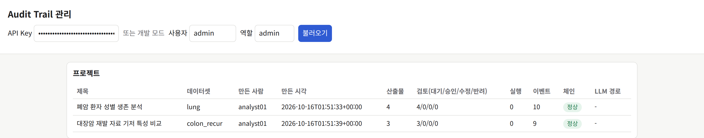
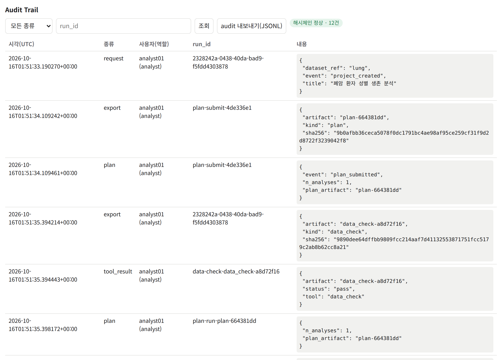
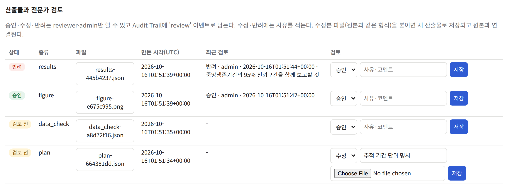

flowchart LR
U["사용자·API 클라이언트"] --> P["앞단 프록시(TLS)"]
subgraph H["기관 서버(Docker)"]
A["agent API :8000"]
R["R 실행 서비스 :8001"]
V["vLLM(선택)"]
D[("runs·uploads 볼륨")]
end
P --> A
A -->|executor-internal| R
A -->|llm-internal| V
A --- D
R --- D
A -.->|frontend| G["GPU 서버 게이트웨이"]
A -.->|기관이 허용할 때만| X["외부 LLM"]
기관 전용 배포·보안 운영 가이드
clinical-agent를 병원·기업 서버에 설치하고 운영하는 IT·보안 담당자용
| 항목 | 내용 |
|---|---|
| 버전 | 0.1 (검토 전 초안) |
| 작성일 | 2026-10-12 |
| 작성 | 차라투 임창우(초안 작성에 Claude Code 사용) |
| 기준 코드 | clinical-agent 90998d9 |
| 등록부 | Skill 106종(생성 2026-10-27 13:58:45 UTC) |
문서 안내
- clinical-agent: 임상연구 자료의 통계 분석을 AI agent가 계획해 미리 검증·등록한 분석모듈(Agent Skill)로 실행하고 결과를 보고서 초안으로 정리하는 시스템
- 이 문서는 병원·기업이 이 시스템을 자기 서버에 설치해 쓰는 배포형을 다룸
- 독자: 기관의 IT·보안 담당자, 배포 엔지니어
- 서버와 보안 설정만 다룸
- 분석모듈을 새로 만드는 방법: 「① Agent Skill 표준·등록부」
- 분석 화면을 쓰는 방법: 「② openstat AI 분석 사용자 가이드」
다 읽고 나서 할 수 있어야 하는 일:
- 깨끗한 Linux 서버에 이미지를 빌드하고 서비스를 띄운 뒤 정해 둔 점검표로 설치 확인
- 기관 전용 LLM 서버(vLLM)를 붙이고 모델을 설정만으로 교체
- API Key 발급·폐기, IP allowlist, 신뢰 프록시, 포털 연동용 위임 키 운영
- 자료 업로드의 가명처리와 재식별 위험 점검, LLM 입력 보호, 업무별 LLM 분리가 어떻게 동작하는지 알고 설정
- Audit Trail 조회·검증·내보내기, 전문가 검토 권한 배분
- 정기 점검, 백업, 업그레이드, 장애 대응
표기:
- 명령은 Ubuntu 24.04 서버의 bash 기준
- 저장소는
/opt/clinical-agent에 받았다고 가정. 따로 적지 않으면 그 폴더에서 실행 - 꺾쇠(
<API_KEY>,<PID>)는 실제 값으로 바꿀 자리 - compose 명령이 길어서 3.7절에서 셸 변수
DC를 정하고 이후 장에서는sudo $DC ...형태로 씀 - 본문에 “검증하지 않음”이라고 적은 절차: 코드와 설정을 읽고 쓴 것. 실제 서버에서 그 순서대로 실행해 확인하지는 않음
- 실측값에는 잰 날짜와 조건을 함께 적음
- 표 가운데 환경변수·API·컨테이너 설정·패키지 기준 버전·모델 인자는 문서를 만들 때 저장소의 코드와 설정 파일에서 직접 읽어 만듦
1 구성과 데이터 흐름
1.1 구성 요소
- 배포 번들: Docker 이미지 두 개, compose 파일 하나(
deploy/compose.yml) - 전용 LLM을 붙이는 방법은 둘 중 하나
- 같은 compose에 선택 구성으로 넣음
- 별도 GPU 서버에 두고 게이트웨이로 붙임
| 구성 요소 | 하는 일 | 실행 형태 |
|---|---|---|
| agent API | 요청을 받아 agent 6종(오케스트레이션, 분석설계, 통계실행, 품질검증, 리포트생성, 컨설팅응답) 실행. API Key·IP 접속 제한, 프로젝트·산출물·전문가 검토 저장, Audit Trail 담당. 분석 콘솔(/console)과 관리자 화면(/admin) 제공 |
clinical-agent/agent 이미지(Python 3.14, FastAPI·uvicorn), 포트 8000 |
| R 실행 서비스 | 등록부에 있는 Skill만 실행. 요청으로는 Skill ID·인자·데이터셋 ID만 받고 R 코드는 받지 않음. 자료 구조 조회, 데이터 검증, 업로드 자료 가명처리도 담당 | clinical-agent/r-executor 이미지(R 4.5.1, plumber), 포트 8001(내부망만) |
| 전용 LLM | 요청을 해석해 Skill과 인자 선택. 결과 요약·보고서 문장 작성. OpenAI 호환 API로 호출 | vLLM. compose의 선택 구성 또는 별도 GPU 서버 |
| LLM 게이트웨이 | 별도 GPU 서버 앞에서 API Key와 허용 IP를 확인하고 vLLM으로 전달 | deploy/llm-gateway/run.sh가 띄우는 nginx 컨테이너 |
| 외부 LLM(선택) | 기관이 허용한 경우에만 사용. 업로드 자료가 걸리지 않은 문서 업무(컨설팅응답, 리포트생성)만 | 기관이 계약한 OpenAI 호환 API |
| reverse proxy | 사용자의 HTTPS 접속을 받아 TLS를 처리하고 agent API로 전달. 번들에 없음 | 기관이 준비(nginx 등) |
- agent API와 R 실행 서비스를 나눈 이유: 원자료를 다루는 곳을 R 실행 서비스 하나로 좁히려는 것
- agent API와 LLM은 행 단위 자료를 받지 않음
- R 실행 서비스는 외부로 나가는 연결이 없는 내부망에만 붙어 있음. 이 서비스에 접근하는 것은 agent뿐
1.2 기관 내부 구성과 네트워크 경계
- compose가 네트워크 세 개를 만듦
executor-internal,llm-internal:internal: true로 만들어 바깥으로 나가는 경로 없음- R 실행 서비스는
executor-internal에만, compose 안의 vLLM은llm-internal에만 붙음 - agent는 세 네트워크에 모두 붙고
frontend로 호스트 포트(기본 8000)를 엶
frontend는 일반 브리지 네트워크 → agent는 바깥으로 연결할 수 있음- 별도 GPU 서버의 게이트웨이나 외부 LLM에 붙으려면 이 경로가 필요
- 기관이 할 일: 호스트 방화벽에서 agent가 나갈 수 있는 주소를 게이트웨이(와 허용한 외부 LLM)로만 좁힘
기관 안에 남는 것:
- 업로드 원본: 처리 중에만 업로드 볼륨에 잠시 있고 처리가 끝나면 지움
- 기관 서버의 Docker 볼륨에 남는 것: 가명처리한 정제본, 프로젝트 산출물(분석계획·결과표·그림·보고서), Audit Trail, 보안 로그, 업로드 처리 기록
- 전용 LLM을 쓰는 한 이 가운데 어떤 것도 기관 밖으로 나가지 않음
1.3 데이터 흐름
- 분석 요청 하나가 처리되는 순서는 아래 그림
- 원자료(행 단위 값)는 R 실행 서비스 안에만 있음. LLM에는 자료 구조와 요약통계, 결과표만 감
sequenceDiagram participant U as 사용자 participant A as agent API participant R as R 실행 서비스 participant L as 전용 LLM U->>A: 요청 문장 A->>R: 자료 구조 조회 R-->>A: 변수·형식·범주·요약통계 A->>L: 요청 + 자료 구조 + Skill 목록 L-->>A: Skill·인자 선택 A->>R: Skill ID·인자·데이터셋 ID R-->>A: 결과표·그림 A->>L: 결과표(소표본 셀 가림) L-->>A: 답변 문장 A-->>U: 답변·산출물(원래 값)
| 정보 | R 실행 서비스 | agent(볼륨에 저장) | LLM에 가는가 |
|---|---|---|---|
| 업로드 원본 | 처리 중에만 읽고 지움 | 받은 파일을 처리 전까지 업로드 볼륨 raw/에 둠 |
가지 않음 |
| 가명처리 정제본(행 단위) | 분석할 때 읽음 | 업로드 볼륨 clean/에 남음 |
가지 않음 |
| 자료 구조(변수 이름·형식·범주·요약통계) | 만듦 | 실행 기록에 남음 | 감. 업로드 자료는 최솟값·최댓값과 범주 30개를 넘는 열의 값 목록을 뺌 |
| 결과표(집계값) | 만듦 | 산출물로 저장 | 감. 업로드 자료는 1~4건 셀을 <5로 가림. 200행을 넘는 표는 보내지 않음 |
| 그림(PNG) | 만듦 | 산출물로 저장 | 이름과 제목만 감 |
| 요청 문장 | 받지 않음 | Trajectory에 원문, Audit Trail에 해시 | 감 |
2 요구 사양
2.1 검증한 서버 조합
- 설치 절차는 2026-10-10 깨끗한 클라우드 VM 한 대에서 처음부터 끝까지 실행해 확인(3.9절)
- 그때의 조합은 아래 표. 다른 배포판과 CPU 구조는 시험하지 않음
| 항목 | 검증한 값 | 비고 |
|---|---|---|
| OS | Ubuntu 24.04 LTS, x86_64 | ARM 서버는 시험하지 않음 |
| Docker | Ubuntu 저장소의 docker.io, docker-compose-v2 패키지 |
설치된 버전 번호는 기록하지 않음. compose는 v2 문법(docker compose) |
| CPU·메모리 | 8 vCPU, 32GB | 클라우드 범용 8코어급(GCP n2-standard-8) |
| 디스크 | 100GB 이상 권장 | 이미지와 빌드 중간 층, 볼륨 증가분을 합한 여유 |
| 빌드 때 인터넷 | 필요 | 아래 “빌드에 필요한 외부 주소” |
| 실행 때 인터넷 | 필요 없음 | 전용 LLM이 같은 기관망 안에 있을 때 |
2026-10-11 기능 시험:
- 조건
- 같은 크기의 서버(8 vCPU, 32GB)에 이 번들과 같은 구조로 agent와 R 실행 서비스를 띄움
- H100 80GB 1장에 올린 Qwen3.8-27B를 붙임
- 그때 잰 소요 시간
- 분석모듈 1회 실행: 중앙값 0.6초(최대 51.8초)
- 보고서 초안(docx·pptx): 15~41초
- 자연어 한 문장으로 분석부터 보고서까지: 200초
- 동시 사용자 수에 따른 처리량은 재지 않음(미측정)
2.2 디스크와 메모리 산정
- 2026-10-10 실측 이미지 크기: R 실행 서비스 3.37GB, agent 358MB
- 빌드하는 동안에는 기반 이미지(
rocker/r-ver:4.5.1,python:3.14-slim)와 중간 층이 더 필요 - 운영하면서 늘어나는 것: Docker 볼륨 두 개(
runs,uploads), 컨테이너 로그 - 프로젝트 하나가 차지하는 크기는 산출물 종류에 따라 다름. 장기 운영 증가량은 재지 않음
- 디스크 사용량을 정기 점검 항목에 넣음(12장)
CPU·메모리 상한과 동시 처리:
- compose는 R 실행 서비스에 CPU 2개, 메모리 2GB, 프로세스 128개 상한을 둠. agent에는 상한 없음
- R 실행 서비스는 한 번에 요청 하나만 처리
- 일부 Skill wrapper가 패키지 결함을 피하려고 임시 전역 객체를 씀 → 같은 R 프로세스에서 동시에 돌지 않도록 만듦
- 여러 사용자가 동시에 분석을 돌리면 R 실행 서비스 앞에서 차례를 기다림
- 이 대기도 agent가 R 실행 서비스를 부를 때의 timeout(90초, 코드에 고정)에 포함 → 동시 사용이 많은 기관은 16장의 제한을 먼저 확인
2.3 빌드에 필요한 외부 주소
- 이미지를 빌드하는 서버는 아래 주소로 나갈 수 있어야 함
- 폐쇄망이면 인터넷이 되는 서버에서 빌드하고 이미지를 옮김(3.10절)
| 용도 | 주소 | 쓰는 곳 |
|---|---|---|
| 기반 이미지 | Docker Hub(rocker/r-ver, python) |
두 Dockerfile의 FROM |
| 시스템 라이브러리 | Ubuntu 패키지 저장소 | R 실행 서비스 Dockerfile의 apt-get |
| R 패키지(날짜 고정 스냅샷) | packagemanager.posit.co |
CRAN_SNAPSHOT(2026-06-30) |
| R 패키지(버전 고정 보관본) | cloud.r-project.org |
스냅샷에 없는 옛 버전 |
| R 패키지(커밋 고정) | github.com |
statgarten 패키지 4종과 의존 패키지 3종의 소스 묶음 |
| Python 패키지 | PyPI | agent/requirements.lock |
| 전용 LLM(선택) | Docker Hub(vllm/vllm-openai), Hugging Face |
GPU 서버의 vLLM 이미지와 모델 가중치 |
2.4 GPU와 모델 크기
- GPU는 전용 LLM 서버에만 필요. agent와 R 실행 서비스는 CPU만 씀
- GPU 메모리는 가중치 크기보다 넉넉해야 함
- 모델 가중치와 함께 KV 캐시(동시 요청을 처리하는 작업 공간)가 들어가야 하기 때문
- 아래 표: 2026-10-10 GCP의 NVIDIA H100 80GB에서 실제로 띄워 본 구성. 모델 크기는 같은 날 Hugging Face에서 확인한 값
| 모델(서빙 이름) | 가중치 | 띄워 본 GPU 구성 | 라이선스 | 비고 |
|---|---|---|---|---|
Qwen3.8-27B(qwen27b) |
55.6GB, BF16 | H100 1장, H100 2장(TP2) | Apache-2.0 | 1장에서는 --max-num-seqs 128 필요(기본값 1024면 기동 실패) |
Gemma 4 31B(gemma31b) |
62.6GB, BF16 | H100 2장(TP2) | Apache-2.0 | |
DeepSeek-V4-Flash-0731(dsv4flash0731) |
166.9GB, FP4+FP8 | H100 4장(TP4) | MIT | 첫 기동 822초, 컴파일 캐시를 다시 쓰면 468초 |
Qwen3.8-Flash-Next FP8(qwenflashnext) |
185.5GB, FP8 | H100 4장(TP4) | Qwen Community License 1.0 | 전용 vLLM 이미지 필요 |
K-EXAONE 236B FP8(kexaone) |
245.1GB, FP8 | H100 4장(TP4) | K-EXAONE AI Model License | 282GB급 구성에서는 KV 캐시 여유가 약 37GB뿐 |
- TP2·TP4: 모델을 GPU 2장·4장에 나눠 올리는 텐서 병렬
- 아래 표: 같은 날 같은 조건(입력 2,048·출력 512 토큰)으로 잰 처리량
- 구성이 서로 달라 모델끼리 직접 비교하는 값이 아님
| 모델 | 구성 | 기동(초) | 첫 토큰(ms, 동시 1) | 출력 tok/s(동시 1) | 출력 tok/s(동시 16) | 출력 tok/s(동시 64) |
|---|---|---|---|---|---|---|
| Qwen3.8-27B | H100×2, TP2 | 87 | 156 | 80 | 929 | 2,213 |
| Gemma 4 31B | H100×2, TP2 | 112 | 137 | 56 | 737 | 1,525 |
| DeepSeek-V4-Flash-0731 | H100×4, TP4 | 468 | 167 | 123 | 1,128 | 2,329 |
| Qwen3.8-Flash-Next FP8 | H100×4, TP4 | 242 | 177 | 120 | 979 | 2,155 |
| K-EXAONE 236B FP8 | H100×4, TP4 | 105 | 104 | 127 | 847 | 2,159 |
GPU 서버 쪽 소프트웨어:
- vLLM v0.30.0 이미지(CUDA 13.0 기반)로 맞춤
- 이 이미지는 NVIDIA 드라이버 580 이상 필요. 측정 때 드라이버는 615.71.09
- Docker에서 GPU를 쓰려면 NVIDIA Container Toolkit을 설치하고 Docker 런타임에 등록해야 함(
nvidia-ctk runtime configure --runtime=docker) - Qwen3.8-27B를 H100 1장에 서빙한 서버는 부트 디스크 300GB로 운영
2.5 모델 선택 참고 측정값
- 같은 날 6개 모델로 같은 agent와 같은 시나리오를 돌려 비교
- 모든 모델 공통 조건: temperature 0, 사고(thinking) 모드 끔, vLLM v0.30.0, 최대 문맥 65,536 토큰
- 시나리오: 개발 쪽에서 만든 시험 세트. 모델마다 한 번씩만 실행
- 통계실행 47개 × 3회
- agent 6종 흐름 22개 × 2회
- 한국어·의학문서 합성 54문항
- agent 프롬프트를 Qwen3.8-27B로 다듬었기 때문에 이 모델에 유리할 수 있음
| 모델 | 통계실행 정확도 | 예외 처리 | agent 6종 흐름 | 한국어 어려운 문항 |
|---|---|---|---|---|
| Qwen3.8-27B | 100.0% | 87.5% | 42/44 | 87.5% |
| Gemma 4 31B | 97.4% | 100.0% | 42/44 | 100.0% |
| DeepSeek-V4-Flash-0731 | 96.6% | 95.8% | 42/44 | 87.5% |
| Qwen3.8-Flash-Next FP8 | 94.9% | 70.8% | 40/44 | 95.8% |
| K-EXAONE 236B FP8 | 65.0% | 87.5% | 26/44 | 91.7% |
이 결과로 본 후보:
- GPU 1~2장 서버
- Qwen3.8-27B: 도구 호출(Skill과 인자 선택)이 가장 정확
- Gemma 4 31B: 정확도 차이가 작으면서 예외 처리와 한국어 문항이 좋음
- 둘 다 Apache-2.0
- 가중치 166.9GB에 KV 캐시 여유까지 담을 수 있는 서버(측정은 H100 4장, 합계 320GB)
- DeepSeek-V4-Flash-0731(MIT)도 후보. 단 기동에 8~14분 걸림
- 비교에서 빠진 모델
- Llama 4 Scout: vLLM v0.30.0에서 agent의 도구 정의와 맞는 도구 호출 설정을 찾지 못해 agent 평가를 하지 못함(Skill ID에 하이픈이 있어 파이썬식 도구 호출 형식이 이름을 읽지 못함)
- EXAONE 4.5 33B: 라이선스가 연구·교육 목적만 허용해 비교에서 뺌
- 모델 라이선스: 15장
3 설치
3.1 설치 순서 요약
- 서버에 Docker와 git 설치
- 소스를 받아 기준 코드(커밋) 확인
- 이미지 두 개 빌드
- 빌드 마지막에 R 패키지 기준 버전을 확인해 다르면 빌드 실패
- (선택) 컨테이너 안에서 R 테스트 전체 실행
- 키 폴더를 만들고 관리자 API Key 발급,
deploy/.env에 비밀값과 설정 입력 - compose로 서비스 기동
- 설치 확인 점검표를 차례로 실행
- 전용 LLM 연결(4장), reverse proxy로 TLS 적용(3.11절)
- 1~7단계에는 LLM이 필요 없음
- 깨끗한 VM에서 이 순서로 한 번에 실행한 기록: 3.9절
3.2 Docker 설치
- Ubuntu 24.04에서는 배포판 저장소의 패키지로 설치
sudo apt-get update
sudo apt-get install -y docker.io docker-compose-v2 git
sudo docker version
sudo docker compose version- 이 문서의 명령은 검증 때처럼
sudo docker로 씀 - 운영자 계정을
docker그룹에 넣어sudo없이 쓰는 방법도 있음. 계정을 정할 때 고려할 점:docker명령을 쓸 수 있는 계정은 컨테이너의 환경변수(가명처리 키 등)를 볼 수 있음- 사실상 root 권한이 있음
3.3 소스 받기
- 배포 담당자에게 받은 저장소(또는 git 번들 파일)를
/opt/clinical-agent에 받음 - 받은 커밋이 배포 안내서의 커밋과 같은지 확인
sudo mkdir -p /opt/clinical-agent && sudo chown "$USER" /opt/clinical-agent
git clone <저장소 주소 또는 번들 파일> /opt/clinical-agent
cd /opt/clinical-agent
git rev-parse --short HEAD같은 서버에 설치를 다시 하는 경우:
- 이전 실행에서 root 권한으로 만든 파일(
deploy/secrets/등)이 남아 있어git clone이나 파일 덮어쓰기가 실패할 수 있음 - 다시 받을 때는 기존 폴더를
sudo rm -rf /opt/clinical-agent로 지움 - 운영 중인 서버라면 지우기 전에 11장의 백업 대상(특히
deploy/.env와deploy/secrets/)을 먼저 옮겨 둠
3.4 이미지 빌드
- 저장소 루트에서 이미지 두 개를 빌드
- 태그는 compose가 찾는 이름(
:dev)과 같아야 함
sudo docker build -f r-executor/Dockerfile -t clinical-agent/r-executor:dev .
sudo docker build -f agent/Dockerfile -t clinical-agent/agent:dev .R 실행 서비스 이미지는 r-executor/install_packages.R로 패키지를 설치. 설치 순서:
- 2026-06-30 날짜로 고정한 CRAN 스냅샷(Posit Package Manager)에서 기본 패키지 설치
- 날짜를 고정했으므로 언제 빌드해도 같은 버전이 깔림
- 분석 기반 패키지(statgarten 패키지 등)와 호환되는 옛 버전을 먼저 고정 설치(tune, factoextra, vip, lightgbm)
- 순서가 바뀌면 GitHub 패키지 설치가 최신 lightgbm을 먼저 깔아 실패
- GitHub 패키지는 커밋을 고정한 소스 묶음(
https://github.com/<저장소>/archive/<커밋>.tar.gz)을 직접 받아 설치- GitHub API를 쓰지 않음 → 인증 없이 반복 빌드해도 호출 한도에 걸리지 않음
- 의존성은 필수 의존성만 스냅샷에서 설치. 설치가 끝나면 고정 버전이 바뀌지 않았는지 다시 확인
- 마지막에 아래 기준 버전과 실제 설치 버전을 표로 출력. 하나라도 다르면
stopifnot에서 빌드 중단
| 패키지 | 기준 버전 | 구분 |
|---|---|---|
| jstable | 1.3.25 | 분석 기반 패키지 |
| jskm | 0.6.3 | 분석 기반 패키지 |
| jsmodule | 2.0.1 | 분석 기반 패키지 |
| splineplot | 0.3.0 | 분석 기반 패키지 |
| stove | 1.2.0 | 분석 기반 패키지 |
| soroban | 0.0.9 | 분석 기반 패키지 |
| board | 0.0.4 | 분석 기반 패키지 |
| shiny.likert | 0.0.1 | 분석 기반 패키지 |
| tune | 1.1.2 | 호환 버전 고정 |
| factoextra | 1.0.7 | 호환 버전 고정 |
| vip | 0.4.6 | 호환 버전 고정 |
| lightgbm | 3.3.5 | 호환 버전 고정 |
기준 버전 확인에서 빌드가 멈췄을 때:
- 출력된 표의
want(기준)와got(설치됨) 행을 비교 - 대부분은 스냅샷·보관본·GitHub 주소에 나가지 못해 일부 패키지가 다른 경로로 설치된 경우
- 기준 버전을 바꿔 빌드를 통과시키지 않음. 분석 결과의 재현성이 이 기준선에 기대고 있음
- 빌드 중에 겪은 문제와 이미 반영한 해결: 14장
agent 이미지:
agent/requirements.lock의 고정 버전으로 Python 패키지 설치- 실행에 필요한 파일만 복사: agent 패키지, Skill 등록부
registry/registry.json, 컨설팅 지식베이스, 관리자·콘솔 화면 - 두 이미지 모두 UID 10001 사용자로 실행. 업로드 볼륨을 두 컨테이너가 같이 쓰기 때문에 UID를 맞춤
3.5 (선택) 컨테이너 안에서 R 테스트
- 빌드한 R 실행 서비스 이미지로 저장소의 R 테스트 전체를 돌려 개발 환경과 같은 결과가 나오는지 확인
- 테스트 도구(testthat·withr·xml2)는 이미지에 넣지 않음 → 이때만 설치
- 컨테이너를 root로 띄우고 저장소를
/src에 연결 → 운영 서비스와 따로 실행
sudo docker run --rm --user root -v "$PWD":/src -w /src -e CLINICAL_AGENT_ROOT=/src --entrypoint Rscript \
clinical-agent/r-executor:dev -e 'for (p in c("testthat","withr","xml2")) if (!requireNamespace(p, quietly=TRUE)) install.packages(p, repos=Sys.getenv("CRAN_SNAPSHOT")); source("r-executor/tests/testthat.R")'- 기대 결과: 실패 0건
- 2026-10-10 검증: 3,891건 통과, 1,064초 걸림
- 테스트 건수는 Skill이 늘면 함께 늘어남
3.6 비밀값과 .env
compose가 쓰는 비밀값 두 종류:
- API Key 해시 파일: 키 폴더
deploy/secrets/를 agent의/run/keys에 읽기 전용으로 연결. agent는 그 안의api_keys.json을 읽음- 파일이 아니라 폴더를 연결하므로 키 발급·폐기가 재시작 없이 반영됨(5.3절)
- 나머지(가명처리 키, LLM 키 등):
deploy/.env에서 읽어 컨테이너 환경변수로 넘김 - 둘 다
.gitignore,.dockerignore에 들어 있어 git과 이미지 빌드 문맥에서 빠짐
- 키 폴더를 만들고 관리자 API Key 발급
- 키 폴더는 agent 컨테이너 사용자(UID 10001) 소유로 만듦
- 키 발급 도구는 agent 이미지 안에 있음. 컨테이너를 같은 UID 10001로 잠시 띄워
deploy/secrets/api_keys.json에 키 해시를 씀 - 키 파일이 처음부터 UID 10001 소유로 만들어지므로 소유자를 따로 바꿀 필요 없음
sudo mkdir -p deploy/secrets && sudo chown 10001 deploy/secrets && sudo chmod 700 deploy/secrets
sudo docker run --rm --user 10001 -v "$PWD/deploy/secrets":/s -w /app/agent clinical-agent/agent:dev \
python -m clinical_agent.auth issue --keys-file /s/api_keys.json --user admin --role admin --ips <관리자 PC IP>/32- 화면에
키(이번에만 표시, 안전하게 전달): ca_...한 줄이 나옴 - 키 원문은 이때 한 번만 보임. 파일에는 SHA-256 해시만 남음
- 원문을 기관의 비밀번호 관리 도구에 옮겨 두고 터미널 기록에서 지움
--ips를 빼면 IP 제한 없는 키가 됨. 관리자 키는 관리자 PC 주소로 묶어 두기를 권장- 키 관리 자세히: 5장
- 가명처리 키 만들기
- 업로드 자료의 식별번호를 가명으로 바꾸는 HMAC 키(키를 넣어 계산하는 해시)
- 16자 이상이어야 하고 한 번 정하면 바꾸지 않음(6.4절)
deploy/.env쓰기- 처음에는 LLM 없이 필수 값만 넣고 띄움
LLM_MODEL은 compose가 필수로 요구 → LLM을 붙이기 전에는 아무 이름(none)을 넣어 둠- 넣을 수 있는 변수 전체와 설명:
deploy/.env.example(배포용 견본). 나중에 줄을 더할 때 이 파일을 참고
(umask 077; cat > deploy/.env <<EOF
UPLOAD_PSEUDO_KEY=$(openssl rand -hex 32)
ALLOWED_IPS=
TRUSTED_PROXIES=
PRIVACY_MIN_CELL=5
LLM_MODEL=none
EOF
)
ls -l deploy/.env # -rw------- 인지 확인UPLOAD_PSEUDO_KEY는 위 명령이 만든 무작위 64자이 값은 11장의 백업 대상에 넣고 서버 밖의 비밀번호 관리 도구에도 따로 보관
잃어버리면 이후 업로드한 자료의 가명이 이전 자료와 이어지지 않음
저장소 루트의
.env.example은 로컬 개발용 견본(AUTH_MODE=dev등) → 배포에는 쓰지 않음접근 제어 모드는 compose에
AUTH_MODE=key로 고정 →.env에AUTH_MODE를 써도 무시됨(5.1절)아래 표: compose가 컨테이너에 넘기는 환경변수, 각 값이
.env에서 오는지 compose에 고정돼 있는지고정된 값을 바꾸려면 compose 파일을 고쳐야 함
전체 환경변수 목록: 17.2절
| 컨테이너 | 변수 | 값을 정하는 방식 |
|---|---|---|
| r-executor | R_EXECUTOR_TIMEOUT_SEC |
고정 60 |
| r-executor | R_EXECUTOR_UPLOAD_DIR |
고정 /data/uploads |
| r-executor | UPLOAD_PSEUDO_KEY |
.env에 반드시 지정 |
| r-executor | PRIVACY_MIN_CELL |
.env(비우면 5) |
| agent | R_EXECUTOR_URL |
고정 http://r-executor:8001 |
| agent | R_EXECUTOR_UPLOAD_DIR |
고정 /data/uploads |
| agent | RUNS_DIR |
고정 /data/runs |
| agent | AUTH_MODE |
고정 key |
| agent | AUTH_KEYS_FILE |
고정 /run/keys/api_keys.json |
| agent | ALLOWED_IPS |
.env(비우면 빈 값) |
| agent | TRUSTED_PROXIES |
.env(비우면 빈 값) |
| agent | PRIVACY_MIN_CELL |
.env(비우면 5) |
| agent | LLM_GATEWAY_BASE_URL |
.env(비우면 http://vllm:8000/v1) |
| agent | LLM_GATEWAY_API_KEY |
.env(비우면 빈 값) |
| agent | LLM_MODEL |
.env에 반드시 지정 |
| agent | LLM_EXTRA_BODY |
.env(비우면 {}) |
| agent | LLM_EXTERNAL_BASE_URL |
.env(비우면 빈 값) |
| agent | LLM_EXTERNAL_API_KEY |
.env(비우면 빈 값) |
| agent | LLM_EXTERNAL_MODEL |
.env(비우면 빈 값) |
| agent | LLM_EXTERNAL_EXTRA_BODY |
.env(비우면 {}) |
| agent | LLM_EXTERNAL_TASKS |
.env(비우면 빈 값) |
3.7 compose 기동
- compose 명령은 항상 저장소 루트에서 compose 파일과
.env를 지정해 실행 - 이 문서는 이 명령을 셸 변수
DC에 넣어 씀
cd /opt/clinical-agent
DC="docker compose -f deploy/compose.yml --env-file deploy/.env"
sudo $DC up -d
sudo $DC ps- 이미지를 이미 빌드했으므로
up -d는 그 이미지로 컨테이너를 만듦 - 이미지 빌드와 기동을 한 번에 하려면
sudo $DC up -d --build UPLOAD_PSEUDO_KEY나LLM_MODEL이 비어 있으면 compose가 “UPLOAD_PSEUDO_KEY가 필요함”, “LLM_MODEL이 필요함”을 내고 멈춤- compose 프로젝트 이름은 compose 파일이 있는 폴더 이름(
deploy)을 따름 → 볼륨은deploy_runs,deploy_uploads같은 이름으로 만들어짐- 실제 이름은
sudo docker volume ls로 확인해 백업 명령에 씀
- 실제 이름은
- 재시작 정책: 모든 서비스가
restart: unless-stopped- 프로세스가 죽거나 서버를 재부팅하면 Docker가 컨테이너를 다시 띄움
sudo $DC stop·down으로 내린 컨테이너는 다시 띄우지 않음- Docker 데몬이 부팅 때 켜지게 돼 있어야 함(
sudo systemctl is-enabled docker가enabled) - 재부팅 뒤 다시 뜨는 것은 검증하지 않음
- health check(
healthcheck): agent와 R 실행 서비스의/health를 30초마다 확인- 결과는
sudo $DC ps의 상태 칸에(healthy)·(unhealthy)로 나옴. 기동 뒤 30초쯤 지나야(healthy)가 됨 - Docker는
unhealthy라는 이유로 컨테이너를 재시작하지 않음 → 상태 표시와 모니터링용(12.1절)
- 결과는
3.8 설치 확인 점검표
- 아래 순서로 확인
KEY에는 앞에서 발급한 관리자 키를 넣음read -rs는 입력을 화면과 셸 기록에 남기지 않음
| 번호 | 확인하는 것 | 기대 결과 |
|---|---|---|
| 1 | agent 상태 | {"status":"ok","skills":106} |
| 2 | 키 없는 요청 차단 | 401 |
| 3 | 키로 프로젝트 만들기 | 프로젝트 ID(UUID) 출력 |
| 4 | agent → R 실행 서비스 연결(내부망) | {"status":"ok","data_check_artifact":...로 시작하는 JSON |
| 5 | 업로드 가명처리와 공유 볼륨 권한 | "dropped_columns":["name"], "pseudonymized_columns":["patient_id"] |
| 6 | 관리자 API와 Audit Trail 체인 | 프로젝트 목록에 "chain_ok":true |
| 7 | R 실행 서비스 외부 연결 차단 | URL을 열 수 없다는 R 오류 |
| 8 | R 실행 서비스 포트가 호스트에 열리지 않음 | 출력 없음 |
| 9 | R 실행 서비스 상태와 패키지 기준 버전 | ok 106 1.3.25 |
| 10 | 컨테이너 health check | agent, r-executor 모두 Up ... (healthy) |
read -rs KEY # 관리자 키 붙여 넣기
curl -s localhost:8000/health; echo # 1
curl -s -o /dev/null -w '%{http_code}\n' -X POST localhost:8000/projects \
-H 'Content-Type: application/json' -d '{"title":"t","dataset_ref":"lung"}' # 2
PID=$(curl -s -X POST localhost:8000/projects -H "X-API-Key: $KEY" -H 'Content-Type: application/json' \
-d '{"title":"설치 확인","dataset_ref":"lung"}' | python3 -c 'import sys,json;print(json.load(sys.stdin)["id"])')
echo "$PID" # 3
curl -s -X POST localhost:8000/projects/$PID/data-check -H "X-API-Key: $KEY" | head -c 300; echo # 4
printf 'patient_id,name,age,sex\nP1,가명1,40,M\nP2,가명2,51,F\n' > /tmp/s.csv
curl -s -X POST localhost:8000/uploads -H "X-API-Key: $KEY" -F file=@/tmp/s.csv; echo # 5
curl -s localhost:8000/admin/projects -H "X-API-Key: $KEY" | head -c 300; echo # 6
sudo $DC exec r-executor Rscript -e 'try(readLines("https://cran.r-project.org"))' # 7
sudo ss -ltn | grep ':8001 ' # 8
sudo $DC exec agent python -c "import httpx;h=httpx.get('http://r-executor:8001/health').json();print(h['status'],h['skills'],h['packages']['jstable'])" # 9
sudo $DC ps --format 'table {{.Service}}\t{{.Status}}' # 10- 5번 응답의 재식별 위험 등급은
high가 정상- 시험 파일이 두 사람뿐이라 준식별자(age, sex) 조합이 모두 고유하기 때문
- 등급의 뜻: 6.5절
- 1~7번은 2026-10-10 검증 때 이 형태로 실행해 기대 결과를 확인함
- 8~10번은 이 문서를 쓰면서 더한 항목. 검증 때 실행하지 않음
- 확인이 끝나면 시험 파일(
/tmp/s.csv)을 지움 - 시험으로 만든 프로젝트와 업로드 정제본은 볼륨에 남음
- 운영 전에 볼륨을 비우려면
sudo $DC down -v로 내리고(볼륨까지 삭제) 다시 띄움
- 운영 전에 볼륨을 비우려면
3.9 실측 재현 결과
- 2026-10-10 깨끗한 Ubuntu 24.04 VM(GCP n2-standard-8, 8 vCPU)에서 이 장의 절차(R 테스트 포함)를 스크립트로 그대로 실행
- 기준 코드: 커밋
94a375b - 이 문서의 기준 코드는 그 뒤의 커밋. 그 사이에 바뀐 코드로 깨끗한 VM 재현을 다시 하지는 않음
- 그 뒤 바뀐 배포 설정(키 폴더 연결, 재시작 정책, health check, agent 자원 상한)도 VM에서 다시 확인하지 않음
| 단계 | 결과 |
|---|---|
| R 실행 서비스 이미지 빌드 | 성공, 511초, 3.37GB. 기준 버전 확인 통과 |
| agent 이미지 빌드 | 성공, 358MB |
| 컨테이너 안 R 테스트 | 3,891건 통과, 실패 0, 1,064초 |
| compose 기동 후 점검 | health(Skill 106종), 키 없는 요청 401, 데이터 검증(agent → R 실행 서비스), 업로드 가명처리(name 삭제·patient_id 가명), 관리자 API 체인 정상, R 실행 서비스 외부 연결 차단 모두 기대대로 |
3.10 폐쇄망 설치
- 폐쇄망 반입을 자동으로 해 주는 스크립트는 아직 없음
- 인터넷이 되는 서버에서 이미지를 빌드한 뒤 표준
docker save/docker load로 옮김 - 아래 절차는 검증하지 않음
빌드 서버에서:
sudo docker save clinical-agent/r-executor:dev clinical-agent/agent:dev | gzip > clinical-agent-images.tar.gz
sha256sum clinical-agent-images.tar.gz > clinical-agent-images.tar.gz.sha256반입한 서버에서(소스 폴더도 함께 옮김. compose 파일과 deploy/ 구조가 필요):
sha256sum -c clinical-agent-images.tar.gz.sha256
sudo docker load -i clinical-agent-images.tar.gz
sudo $DC up -d --no-build--no-build: 이미지가 없을 때 compose가 빌드를 시도하지 않게 함- 전용 LLM을 같은 망에 둘 때
vllm/vllm-openai:v0.30.0과 게이트웨이용nginx:1.25.4이미지도 같은 방식으로 옮김- 모델 가중치는 4.3절의 Hugging Face 캐시 폴더째 복사
- 키 파일과
.env는 반입 서버에서 새로 만듦
3.11 reverse proxy와 TLS
- 번들에는 TLS 설정이 없음
- agent API는 HTTP(8000)로만 열림 → 기관의 reverse proxy(nginx, 로드밸런서 등)에서 TLS를 끝내고 agent로 넘김
- 인증서는 reverse proxy에 두고 사용자 접속은 HTTPS로 받음. reverse proxy에서 agent까지는 HTTP
- 아래는 같은 구조의 시험 서버 앞단에 쓴 nginx 설정을 일반화한 것. 이 배포 compose에 붙인 형태로는 검증하지 않음
server {
listen 80;
server_name <서버 이름>;
return 301 https://<서버 이름>$request_uri;
}
server {
listen 443 ssl;
server_name <서버 이름>;
ssl_certificate /etc/nginx/cert/server.crt;
ssl_certificate_key /etc/nginx/cert/server.key;
ssl_protocols TLSv1.2 TLSv1.3;
client_max_body_size 60m; # 업로드 상한 50MB + 여유
location / {
proxy_pass http://<agent 주소>:8000;
proxy_set_header Host $host;
proxy_set_header X-Real-IP $remote_addr;
proxy_set_header X-Forwarded-For $remote_addr; # 바깥에서 보낸 값은 버리고 실제 접속 IP만
proxy_set_header X-Forwarded-Proto $scheme;
proxy_http_version 1.1;
proxy_read_timeout 900s; # 분석·보고서 생성은 몇 분 걸릴 수 있다
}
}맞출 설정 세 가지:
client_max_body_size: 업로드 상한(50MB)보다 크게. 작으면 프록시가 413을 냄proxy_read_timeout: 넉넉히. 자연어 한 문장으로 분석부터 보고서까지 만드는 요청은 200초가 걸린 적 있음- 프록시 주소를 agent의
TRUSTED_PROXIES에 넣음
agent 포트(8000) 막기:
- compose 기본값으로는 서버의 모든 네트워크 주소에 열림
- 프록시를 거치지 않은 직접 접속을 막으려면 호스트 방화벽에서 8000번을 프록시 주소에만 엶
- 프록시가 같은 서버에 있다면
.env에AGENT_PORT=127.0.0.1:8000을 넣어 로컬 주소에만 여는 방법도 있음- compose가 이 값을
127.0.0.1:8000:8000으로 풀기 때문. 이 설정은 검증하지 않음
- compose가 이 값을
4 전용 LLM 연결
- agent는 OpenAI 호환 API로만 LLM을 부름
- 어떤 모델을 쓰는지는 코드에 없음.
deploy/.env의LLM_GATEWAY_BASE_URL,LLM_MODEL,LLM_EXTRA_BODY로만 정함 - 모델을 바꿀 때도 이 설정과 GPU 서버의 vLLM 실행 인자만 바꿈
4.1 연결 방식 선택
| 방식 | 구성 | 상태 |
|---|---|---|
| A. 별도 GPU 서버 + 게이트웨이 | GPU 서버에서 vLLM을 127.0.0.1에만 엶. 같은 서버의 게이트웨이(nginx)가 API Key와 허용 IP를 확인해 넘김. agent는 게이트웨이 주소로 접속 |
시험 서버에서 이 방식으로 운영해 확인. 권장 |
| B. compose 안의 vLLM | deploy/compose.yml의 vllm 서비스를 --profile llm으로 함께 띄움. agent와 vLLM은 외부 연결 없는 llm-internal 망으로만 통신 |
검증하지 않음(GPU 서버에서 띄워 보지 않음). 모델별 인자는 .env의 LLM_SERVE_ARGS로 넘김(4.8절) |
- A 방식은 agent와 R 실행 서비스를 CPU 서버에, LLM을 GPU 서버에 둠 → 장비를 나눠 쓰기 쉬움
- GPU 서버를 여러 서비스가 함께 쓸 때도 게이트웨이를 서비스별로 따로 둘 수 있음
flowchart LR
subgraph S1["agent 서버"]
A["agent API"]
end
subgraph S2["GPU 서버"]
G["게이트웨이 nginx<br/>키·허용 IP 확인"]
V["vLLM<br/>127.0.0.1:8000"]
end
A -->|HTTPS + Bearer 키| G
G -->|키 헤더 제거 후 전달| V
4.2 GPU 서버 준비
- Ubuntu 24.04에 NVIDIA 드라이버 설치(vLLM v0.30.0 이미지 기준 580 이상)
- Docker 설치
- NVIDIA Container Toolkit 설치
- Docker 런타임에 등록(
sudo nvidia-ctk runtime configure --runtime=docker) - Docker 재시작
- 컨테이너에서 GPU가 보이는지 확인
- 예:
sudo docker run --rm --gpus all --entrypoint nvidia-smi vllm/vllm-openai:v0.30.0 - 이 확인 명령은 검증하지 않음
- 예:
- 드라이버와 툴킷 설치는 NVIDIA 저장소 안내를 따름
- 측정에 쓴 GPU 서버들은 이 순서를 자동으로 수행하는 설치 스크립트로 준비함. 이 문서에는 그 스크립트가 쓴 vLLM 실행 형태만 옮김
4.3 모델 가중치 받기
- vLLM은 Hugging Face 캐시 구조의 폴더에서 가중치를 읽음
- 아래 명령: vLLM 이미지 안의
huggingface_hub로 고정 커밋의 가중치를 호스트 폴더/opt/data/hf에 받음 - 폐쇄망 GPU 서버: 인터넷이 되는 서버에서 받은 뒤 이 폴더를 통째로 복사
sudo mkdir -p /opt/data/hf /opt/data/vllm-cache
sudo docker run --rm --entrypoint python3 -v /opt/data/hf:/root/.cache/huggingface vllm/vllm-openai:v0.30.0 -c '
import sys
from huggingface_hub import snapshot_download
print(snapshot_download(sys.argv[1], revision=sys.argv[2] or None,
allow_patterns=["*.json", "*.safetensors", "*.txt", "*.jinja", "*.model", "*.tiktoken", "*.py"]))
' Qwen/Qwen3.8-27B 1d4bf0f2ff6012fd82039f2fa52739d0dd7c60c0- Qwen3.8-27B 가중치는 55.6GB. 다른 모델의 크기는 2.4절의 표
- vLLM 이미지와 컴파일 캐시도 같은 디스크에 쌓임 → GPU 서버 디스크는 넉넉히 잡음(Qwen3.8-27B 1장 서빙 서버는 300GB로 운영)
4.4 vLLM 띄우기
- 아래는 Qwen3.8-27B를 GPU 1장에 올리는 명령
- 모델 인자: 문서를 만들 때 저장소의 서빙 모델 정의(
gpu-bench/config/models.conf)에서 읽어 온 값 - 나머지 형태는 측정·시험 때 vLLM을 띄운 스크립트(
gpu-bench/lib/serve.sh)와 같음
sudo docker run -d --name vllm --gpus all --ipc=host --network host \
-v /opt/data/hf:/root/.cache/huggingface -v /opt/data/vllm-cache:/root/.cache/vllm \
-e HF_HUB_OFFLINE=1 -e GLOO_SOCKET_IFNAME=lo --entrypoint vllm vllm/vllm-openai:v0.30.0 \
serve Qwen/Qwen3.8-27B --revision 1d4bf0f2ff6012fd82039f2fa52739d0dd7c60c0 --served-model-name qwen27b \
--host 127.0.0.1 --port 8000 --gpu-memory-utilization 0.90 --tensor-parallel-size 1 \
--max-model-len 65536 --max-num-seqs 128 --language-model-only --reasoning-parser qwen3 --enable-auto-tool-choice --tool-call-parser qwen3_coder명령의 각 부분:
--host 127.0.0.1: vLLM을 서버 안에서만 엶. 바깥 접속은 게이트웨이로만 받음HF_HUB_OFFLINE=1: 실행 중에 Hugging Face에 나가지 않고 미리 받은 가중치만 씀GLOO_SOCKET_IFNAME=lo: 호스트 이름이 64자인 서버에서 분산 초기화가 “File name too long”으로 멈춘 문제를 피하려고 넣음--served-model-name: agent의LLM_MODEL과 같아야 함--enable-auto-tool-choice,--tool-call-parser: agent는 도구 호출(function calling)로 Skill을 고르므로 반드시 필요. 파서 이름은 모델마다 다름--tensor-parallel-size: GPU 2장 이상에 나눠 올릴 때 장수에 맞춤
기동과 확인:
- 서버 재부팅 뒤 자동으로 다시 뜨게 하려면
--restart unless-stopped를 더함(검증하지 않음) - 기동에는 모델 적재와 컴파일 때문에 수십 초에서 수 분 걸림(Qwen3.8-27B H100 2장에서 87초)
- 준비가 끝나면 서빙 이름이 보임
curl -s http://127.0.0.1:8000/v1/models
sudo docker logs --tail 50 vllm # 기동 실패 원인 확인- 아래는 측정에 쓴 다른 모델의 정의
- 모델을 바꿀 때는 같은 명령에서 이미지·ID·커밋·서빙 이름과 인자만 바꿈
| 서빙 이름 | Hugging Face ID | 고정 커밋 | vLLM 이미지 | 라이선스 |
|---|---|---|---|---|
qwen27b |
Qwen/Qwen3.8-27B | 1d4bf0f |
프로파일 기본 | apache-2.0 |
gemma31b |
google/gemma-4-31B-it | 842da37 |
프로파일 기본 | apache-2.0 |
dsv4flash0731 |
deepseek-ai/DeepSeek-V4-Flash-0731 | 7872f01 |
프로파일 기본 | mit |
qwenflashnext |
Qwen/Qwen3.8-Flash-Next-FP8 | 236dfdf |
vllm/vllm-openai:qwen38-flash-next |
other (Qwen Community License 1.0) |
kexaone |
LGAI-EXAONE/K-EXAONE-236B-A23B-FP8 | 44bfd0e |
프로파일 기본 | other (K-EXAONE AI Model License) |
gemma31b 인자:
--max-model-len 65536 --language-model-only --enable-auto-tool-choice --tool-call-parser gemma4 --reasoning-parser gemma4 --chat-template /vllm-workspace/examples/tool_chat_template_gemma4.jinjadsv4flash0731 인자:
--max-model-len 65536 --trust-remote-code --kv-cache-dtype fp8 --block-size 256 --enable-expert-parallel --tokenizer-mode deepseek_v4 --enable-auto-tool-choice --tool-call-parser deepseek_v4 --reasoning-parser deepseek_v4qwenflashnext 인자:
--max-model-len 65536 --moe-backend triton --max-num-seqs 256 --enable-prefix-caching --no-enable-flashinfer-autotune --attention-config.indexer_kv_dtype fp8 --enable-auto-tool-choice --tool-call-parser qwen3_coder --reasoning-parser qwen3kexaone 인자:
--max-model-len 65536 --enable-auto-tool-choice --tool-call-parser hermes --reasoning-parser deepseek_v3- Qwen3.8-Flash-Next: 전용 이미지와 환경변수
VLLM_PLE_CPU_OFFLOAD=1필요. KV 캐시를 FP8로 두면(--kv-cache-dtype fp8) 기동 실패 - Llama 4 Scout: 이 버전의 vLLM에서 agent의 도구 정의와 맞는 설정을 찾지 못함 → 쓰지 않음
4.5 게이트웨이 설치
deploy/llm-gateway/run.sh: GPU 서버에 nginx 컨테이너(nginx:1.25.4, 호스트 네트워크)를 띄워 vLLM 앞을 막음- 저장소의 이 스크립트 하나를 GPU 서버에 복사해 root로 실행
- 키는 명령줄이나 셸 기록에 남지 않도록 표준입력으로만 받음
KEY=$(openssl rand -hex 32) # 영문·숫자·_- 32자 이상. agent의 LLM_GATEWAY_API_KEY와 같은 값
printf '%s' "$KEY" | sudo bash run.sh --listen <GPU 서버 IP>:9000 --allow <agent 서버 IP>/32 \
--tls-cert server.crt --tls-key server.key| 인자 | 뜻 |
|---|---|
--listen 주소:포트 |
게이트웨이가 받는 주소. 필수 |
--allow CIDR[,CIDR] |
접속을 허용할 주소(allowlist). 목록 밖은 nginx가 403으로 막음. 필수 |
--upstream 주소:포트 |
vLLM 주소. 기본 127.0.0.1:8000 |
--tls-cert, --tls-key |
인증서와 키. 주면 TLS로 받음. 기관망 밖을 거치면 반드시 쓰거나 VPN 안에 둠 |
stop |
sudo bash run.sh stop으로 게이트웨이를 내림 |
스크립트가 만드는 것:
/opt/llm-gateway/default.conf(권한 600, 키 포함)를 만들고 컨테이너를--restart unless-stopped로 띄움- 만들어진 설정의 동작
/v1/경로만 받음. 그 밖의 경로는 404Authorization: Bearer <키>가 맞지 않으면 401- 키를 확인한 뒤
Authorization헤더를 지우고 vLLM으로 넘김 - 요청 본문은 20MB까지, 응답 timeout은 600초
- 한 GPU 서버에 앱 서버별로 키와 allowlist가 다른 게이트웨이를 여럿 둘 때: 환경변수
GATEWAY_NAME으로 이름과 설정 폴더(/opt/<이름>)를 나누고 포트를 다르게 줌
2026-10-10 시험 결과:
- 키가 없거나 틀린 요청: 401
- allowlist 밖 주소: 맞는 키라도 403
- vLLM의 8000번 포트: 바깥에서 닫혀 있었음
- agent 서버에서 같은 확인을 함
curl -s -o /dev/null -w '%{http_code}\n' https://<GPU 서버>:9000/v1/models # 401
curl -s https://<GPU 서버>:9000/v1/models -H "Authorization: Bearer <게이트웨이 키>" # 서빙 이름이 든 JSON사설 인증기관(CA)이 서명한 인증서를 쓸 때:
curl에는--cacert <CA 파일>을 붙임- agent 컨테이너도 그 CA를 믿어야 함. 그런데 compose에는 CA 파일을 넣는 설정이 없음
- CA 파일을 agent 컨테이너에 연결하고
SSL_CERT_FILE로 지정하는 방법이 있지만 검증하지 않음 - 공인 인증서를 쓰거나 VPN 안에서 TLS 없이 붙는 방법을 먼저 검토
4.6 agent 설정
deploy/.env에 전용 LLM 설정을 넣음(설치 때 넣은LLM_MODEL=none줄은 바꿈)
LLM_GATEWAY_BASE_URL=https://<GPU 서버>:9000/v1
LLM_GATEWAY_API_KEY=<게이트웨이 키>
LLM_MODEL=qwen27b
LLM_EXTRA_BODY='{"chat_template_kwargs":{"enable_thinking":false}}'- agent 컨테이너를 다시 만듦
sudo $DC up -d agentup -d는 설정이 바뀐 컨테이너만 다시 만듦LLM_EXTRA_BODY: 요청마다 덧붙는 모델별 옵션(JSON)- 위 값은 사고(thinking) 모드를 끄는 설정. 모델 비교와 시험 서버에서 모두 이 값을 씀
- 채팅 템플릿이 모르는 키는 무시됨 → 다른 모델에 그대로 둬도 오류가 나지 않음
- 값을 작은따옴표로 감쌈
연결 확인 명령 세 개:
- 첫째: agent 컨테이너 안에서 게이트웨이까지 닿는지 확인(키는 화면에 찍지 않음)
- 둘째: LLM을 쓰는 업무를 하나 실행
- 셋째: 그 실행이 어느 경로·모델로 갔는지 Audit Trail에서 확인
PID와KEY는 3.8절에서 쓴 값- 이 세 명령은 이 형태로 실행해 보지 않음
sudo $DC exec agent python -c "import os,httpx;r=httpx.get(os.environ['LLM_GATEWAY_BASE_URL']+'/models',headers={'Authorization':'Bearer '+os.environ['LLM_GATEWAY_API_KEY']});print(r.status_code,r.text[:200])"
curl -s -X POST localhost:8000/projects/$PID/analyze -H "X-API-Key: $KEY" -H 'Content-Type: application/json' \
-d '{"request":"성별에 따른 생존 차이를 log-rank 검정으로 비교해 줘"}' | head -c 500; echo
curl -s "localhost:8000/admin/projects/$PID/audit?type=llm_call" -H "X-API-Key: $KEY" \
| python3 -c 'import sys,json;[print(e["ts"],e["data"]["route"],e["data"]["model"]) for e in json.load(sys.stdin)["events"]]'- 전용 LLM 설정이 비어 있는데 LLM이 필요한 요청이 오면 agent가 503과 함께 “전용 LLM(LLM_GATEWAY_BASE_URL·LLM_MODEL)이 설정되지 않음”을 돌려줌. 외부 LLM으로 대신 보내지 않음
- agent의 LLM 응답 timeout: 호출 한 번에 120초(코드에 고정)
- timeout이나 서버 오류 때의 retry는 OpenAI 클라이언트 라이브러리의 기본 설정을 따름. 코드에서 따로 정하지 않음
4.7 모델 바꾸기
- 모델 교체는 설정만 바꾸는 작업
4.8 compose 안의 vLLM(선택 구성)
deploy/compose.yml에는 GPU가 있는 서버 한 대에 모두 올리는 구성이 들어 있음- 모델은 compose 파일이 아니라
.env의 값으로만 정함. 아래 값을 넣고--profile llm으로 띄움
| 변수 | 뜻 | 기본값 |
|---|---|---|
LLM_SERVE_MODEL |
올릴 가중치(Hugging Face ID 또는 컨테이너 안 경로) | 없음(비우면 vLLM이 뜨지 않음) |
LLM_MODEL |
서빙 이름. agent도 이 이름으로 부름 | 없음(필수) |
LLM_SERVE_ARGS |
모델별 vLLM 인자(아래) | 없음(도구 호출 인자가 없으면 vLLM이 뜨지 않음) |
MODEL_DIR |
가중치를 둔 호스트 폴더(컨테이너의 Hugging Face 캐시로 연결). 상대 경로는 deploy/ 기준 |
./models |
VLLM_VERSION |
vLLM 이미지 태그 | v0.30.0 |
- compose는 vLLM을
vllm serve <LLM_SERVE_MODEL> --served-model-name <LLM_MODEL> --host 0.0.0.0 --port 8000 <LLM_SERVE_ARGS>로 띄움- 4.4절의 명령과 같은 형태
--host 0.0.0.0이어도 vLLM은 바깥 연결이 없는llm-internal망에만 있고 호스트에 포트를 열지 않음
LLM_SERVE_ARGS에 넣는 것(4.4절 명령의--served-model-name뒤쪽과 같음)--revision <커밋>: 가중치를 고정 커밋으로 받았다면 같은 커밋--gpu-memory-utilization 0.90,--tensor-parallel-size <GPU 장수>- 서빙 모델 정의(
gpu-bench/config/models.conf)의 모델 인자.--enable-auto-tool-choice와--tool-call-parser <파서>가 들어 있음
- 아래는 Qwen3.8-27B를 GPU 1장에 올리는 값. 가중치는 4.3절처럼
/opt/data/hf에 받은 경우
LLM_SERVE_MODEL=Qwen/Qwen3.8-27B
LLM_MODEL=qwen27b
LLM_SERVE_ARGS=--revision 1d4bf0f2ff6012fd82039f2fa52739d0dd7c60c0 --gpu-memory-utilization 0.90 --tensor-parallel-size 1 --max-model-len 65536 --max-num-seqs 128 --language-model-only --reasoning-parser qwen3 --enable-auto-tool-choice --tool-call-parser qwen3_coder
MODEL_DIR=/opt/data/hfsudo $DC --profile llm up -d
sudo $DC logs --tail 50 vllm # 기동 실패 원인 확인LLM_SERVE_ARGS에--enable-auto-tool-choice나--tool-call-parser가 없거나LLM_SERVE_MODEL이 비어 있으면 vLLM을 띄우지 않고 로그에 이유를 남김- agent는 도구 호출로 Skill을 고르므로 이 두 인자 없이 띄운 vLLM과는 같이 쓸 수 없음
- 재시작 정책 때문에 고칠 때까지 같은 로그를 남기며 다시 시도함
LLM_GATEWAY_BASE_URL을 비워 두면 agent는 compose 안의 vLLM(http://vllm:8000/v1)을 부름- vLLM은
llm-internal망에만 있어 가중치를 내려받을 수 없음(HF_HUB_OFFLINE=1) →MODEL_DIR에 미리 넣어 둠 - 컴파일 캐시는
vllm-cache볼륨에 남음 → 컨테이너를 다시 만들어도 다음 기동이 빨라짐 - health check는 vLLM의
/health를 봄. 모델 적재가 오래 걸리므로 기동 뒤 20분 동안의 실패는 세지 않음
이 구성의 상태:
- 검증하지 않음. GPU 서버에서 이 구성으로 띄워 보지 않음
- 확인한 것(2026-10-12):
docker compose config로 위 값이 vLLM 실행 인자로 풀리는 형태, 인자 확인 부분이 빠진 인자를 잡아내는 동작(로컬 셸에서 실행) - 시험 서버에서 운영해 확인한 것은 A 방식 → A 방식을 권장
4.9 외부 LLM
- 기관이 허용하면 업로드 자료가 걸리지 않은 컨설팅응답·리포트생성 업무만 외부 LLM으로 보낼 수 있음
- 조건과 설정: 7.1절
5 접근 제어
- agent API의 접근 제어는 모든 요청이 API에 닿기 전에 거치는 미들웨어 하나가 맡음
- 접속 IP와 API Key 확인
- 키에 적힌 사용자·역할을 요청에 넣음
- 각 API는 그 사용자·역할로 권한을 판정
5.1 운영 모드와 개발 모드
AUTH_MODE는 두 값만 받음. 그 밖의 값이면 agent가 기동하지 않음
| 값 | 동작 | 쓰는 곳 |
|---|---|---|
key |
모든 요청에 API Key 필요. 사용자·역할은 키에서 정함. 요청이 보낸 X-User·X-Role 헤더는 지운 뒤 키의 값으로 바꿔 넣음 |
운영. 배포 compose에 고정 |
dev |
요청 헤더 X-User·X-Role을 그대로 믿음. 헤더가 없으면 anonymous·analyst로 봄 |
개발·자동 시험 전용 |
key모드에서 키를 보내는 헤더:Authorization: Bearer <키>또는X-API-Key: <키>- 배포 compose는
AUTH_MODE=key로 고정 →.env로dev모드를 켤 수 없음 - 키 파일 경로(
AUTH_KEYS_FILE)가 없으면 agent가 기동하지 않음. compose는 이 경로를/run/keys/api_keys.json으로 고정- 호스트의 키 폴더(
.env의AUTH_KEYS_DIR_HOST, 기본deploy/secrets)를 그 자리(/run/keys)에 읽기 전용으로 연결
- 호스트의 키 폴더(
5.2 요청 판정 순서
flowchart TD
Q["요청"] --> H{"경로가 /health?"}
H -->|예| OK["통과"]
H -->|아니오| I{"ALLOWED_IPS 안의 IP?"}
I -->|아니오| D403["403 + 보안 로그"]
I -->|예| S{"GET /console, /admin?"}
S -->|예| OK
S -->|아니오| K{"유효한 키?"}
K -->|아니오| D401["401 + 보안 로그"]
K -->|예| KI{"키별 허용 IP 안?"}
KI -->|아니오| D403
KI -->|예| DG{"위임 키?"}
DG -->|아니오| SET["사용자·역할을 키 값으로"]
DG -->|예| XU{"X-User 형식 맞음?"}
XU -->|아니오| D401
XU -->|예| SET2["사용자 = 키 사용자:넘긴 이름"]
SET --> API["각 API의 권한 판정"]
SET2 --> API
/health는 IP 제한도 받지 않음- 화면 파일(
/console,/admin)은 데이터가 없는 정적 HTML → 키 없이 내려줌. 단ALLOWED_IPS는 적용 - 화면이 부르는 API는 모두 키 필요
- 접속 IP를 정하는 방법: 5.6절
5.3 API Key 발급·폐기
- 키 발급 도구: agent 이미지에 들어 있는
python -m clinical_agent.auth - 하위 명령은
issue(발급)와revoke(폐기) 두 개
| 하위 명령·옵션 | 뜻 |
|---|---|
issue --keys-file <경로> |
키 해시 파일. 없으면 새로 만듦 |
--user <이름> |
사용자 이름. Audit Trail에 이 이름으로 남음 |
--role <역할> |
admin, reviewer, analyst, viewer 가운데 하나 |
--ips <CIDR[,CIDR]> |
이 키를 쓸 수 있는 접속 IP. 비우면 제한 없음 |
--delegate |
포털 연동용 위임 키(5.7절). admin 역할에는 줄 수 없음 |
revoke --keys-file <경로> --user <이름> |
그 사용자의 사용 중인 키를 모두 폐기 |
- 발급한 키는
ca_로 시작하는 무작위 문자열. 발급할 때 한 번만 화면(표준오류)에 나옴 - 키 파일에 남는 것: SHA-256 해시와 사용자·역할·허용 IP·폐기 여부뿐
[
{"key_sha256": "02dd…", "user": "kim", "role": "analyst", "allowed_ips": ["10.20.0.0/16"], "disabled": false},
{"key_sha256": "2037…", "user": "portal", "role": "analyst", "allowed_ips": ["10.30.0.5/32"], "disabled": false, "delegate": true}
]- 운영 서버에서는 agent 이미지로 도구를 잠시 띄워 실행
- 키 폴더 소유자와 같은 UID 10001로 띄움(3.6절에서 키 폴더를 UID 10001 소유로 만듦)
- 키 파일이 agent가 읽을 수 있는 소유자(UID 10001, 권한 600)로 만들어짐 → 실행 뒤 따로 할 일 없음
- root로 띄우면 키 파일 소유자가 root가 되어 agent가 읽지 못함 → 모든 요청이 실패(14장)
# 발급
sudo docker run --rm --user 10001 -v "$PWD/deploy/secrets":/s -w /app/agent clinical-agent/agent:dev \
python -m clinical_agent.auth issue --keys-file /s/api_keys.json --user kim --role analyst --ips 10.20.0.0/16
# 폐기
sudo docker run --rm --user 10001 -v "$PWD/deploy/secrets":/s -w /app/agent clinical-agent/agent:dev \
python -m clinical_agent.auth revoke --keys-file /s/api_keys.json --user kim.env에서AUTH_KEYS_DIR_HOST를 바꿨다면 위 명령의-v왼쪽 폴더도 같은 폴더로 씀키 목록을 보는 별도 명령은 없음 → 파일을 직접 읽음
sudo python3 - deploy/secrets/api_keys.json <<'PY'
import json, sys
for e in json.load(open(sys.argv[1])):
ips = ",".join(e.get("allowed_ips") or []) or "-"
kind = "위임" if e.get("delegate") else "-"
state = "폐기" if e.get("disabled") else "사용"
print(f'{e["user"]:<20} {e["role"]:<9} {ips:<22} {kind:<4} {state}')
PY반영 시점:
- 발급·폐기는 agent 재시작 없이 다음 요청부터 반영됨. 폐기도 바로 효력이 생김
- agent는 요청마다 키 파일의 상태(inode, 수정 시각, 크기)를 보고 바뀌었으면 다시 읽음
- 발급·폐기 도구는 임시 파일을 쓴 뒤 바꿔치기하는 방식으로 파일을 고침 → compose가 파일이 아니라 키 폴더를 연결하므로 바꿔치기한 새 파일이 실행 중인 agent에 보임
- 시험(2026-10-12): agent 서버를 띄워 둔 채 다른 프로세스에서 키 도구로 발급·폐기 → 새 키는 바로 200, 폐기한 키는 바로 401, 서버 재시작 없음(agent 자동 시험)
- 컨테이너에 키 폴더를 연결한 상태로는 이 배포 compose에서 시험하지 않음. 같은 구조의 시험 서버가 같은 방식(키 폴더를 읽기 전용으로 연결)을 씀
- compose를 고쳐 키 파일 하나만 연결하면 바꿔치기한 새 파일이 컨테이너에 보이지 않음 → 폴더 연결을 그대로 둠
키 교체:
revoke는 사용자 이름 단위로 그 사용자의 키를 모두 폐기- 키를 새로 바꿔 줄 때는 먼저
revoke, 그다음issue- 순서를 거꾸로 하면 새로 발급한 키까지 폐기됨
- 폐기한 키를 다시 살리는 명령은 없음
- 퇴직·역할 변경·키 유출 때는 바로 폐기
키 전달:
- 키 원문은 메일 본문이나 메신저에 붙이지 않음. 기관의 비밀번호 관리 도구나 별도 경로로 전달
- 같은 사람에게 역할이 다른 키가 필요하면 사용자 이름을 나눠 발급(예:
kim,kim-review)
5.4 역할별 권한
- 역할은 네 가지. 아래 표는 agent API 코드의 판정을 옮긴 것
- 표의 “자기 것만”: 프로젝트를 만든 사용자와 요청 사용자가 같을 때만 허용
- 남의 프로젝트는 없는 것처럼 404를 돌려줌
| 기능 | admin | reviewer | analyst | viewer |
|---|---|---|---|---|
| Skill 등록부·예제 자료·자료 구조 조회 | 가능 | 가능 | 가능 | 가능 |
| 프로젝트 목록·상세·산출물 내려받기 | 전체 | 전체 | 자기 것만 | 전체 |
| 프로젝트 만들기, 자료 업로드 | 가능 | 가능 | 가능 | 불가(403) |
| 분석 실행(오케스트레이션·분석설계·계획 제출·계획 실행·데이터 검증·통계실행·품질검증·보고서) | 전체 프로젝트 | 전체 프로젝트 | 자기 것만 | 불가(403) |
컨설팅응답(/consult) |
가능 | 가능 | 가능 | 가능 |
| 전문가 검토(승인·수정·반려), 검토 대기 목록 | 가능 | 가능 | 불가(403) | 불가(403) |
관리자 API(/admin/...: Audit Trail·보안 로그·업로드 로그) |
가능 | 불가(403) | 불가(403) | 불가(403) |
- viewer는 쓰기를 못 하지만 모든 프로젝트를 읽을 수 있음
- reviewer는 검토뿐 아니라 모든 프로젝트에서 분석도 실행할 수 있음
- 기관의 역할 분리 기준에 맞춰 키를 나눠 줌. 예:
- 감사 담당자: admin 키
- 통계 검토자: reviewer 키
- 연구자: analyst 키
5.5 허용 IP
- IP 제한은 두 겹
ALLOWED_IPS: 서버 전체에 적용- 키별
allowed_ips(발급 때--ips): 그 키에 적용
- 둘 다 쉼표로 구분한 CIDR(주소 범위 표기, 예:
10.20.0.0/16,192.0.2.10/32) - 둘 다 있으면 둘 다 맞아야 함
- 서버 전체 목록 밖: 키를 확인하기 전에 403
- 키는 맞지만 키별 목록 밖: “이 키로는 허용되지 않은 접속 IP”로 403
ALLOWED_IPS를 바꾸려면deploy/.env를 고치고sudo $DC up -d agent로 다시 만듦- 사용자 PC가 공인 IP 여러 개로 번갈아 나가는 환경(이중 회선 등)
- 요청마다 IP가 달라 키가 번갈아 403이 날 수 있음. 시험 중 실제로 이런 일이 있었음
- 나가는 IP를 모두 allowlist에 넣음
5.6 신뢰 프록시와 X-Forwarded-For
- agent는 기본적으로 TCP 연결의 상대 주소를 접속 IP로 봄
- reverse proxy를 거치면 그 주소는 프록시 주소가 됨 → 실제 사용자 IP로 제한하려면
TRUSTED_PROXIES(agent가 전달 헤더를 믿어 줄 프록시 주소)를 설정
agent가 접속 IP를 정하는 규칙:
- 연결 상대 주소가
TRUSTED_PROXIES안에 있고X-Forwarded-For헤더가 있을 때만 그 헤더를 봄. 그 밖의 요청이 보낸X-Forwarded-For는 무시 - 헤더의 주소 목록을 오른쪽부터 보며 신뢰 프록시가 아닌 첫 주소를 접속 IP로 봄
- 모두 신뢰 프록시면 가장 왼쪽 주소를 씀
- 프록시가 여러 단이면 모든 단의 주소를
TRUSTED_PROXIES에 넣음 - 맨 앞 프록시는 바깥에서 온
X-Forwarded-For를 버리고 실제 접속 주소로 덮어쓰게 설정(3.11절의 설정이 그렇게 함)
agent가 실제로 보는 IP 확인:
- 프록시와 Docker 네트워크 구성에 따라 agent가 보는 연결 상대 주소가 예상과 다를 수 있음
- 키 없이 요청을 하나 보내면 보안 로그에 그 요청의 IP가 남음 → 그 값을 보고
TRUSTED_PROXIES나 allowlist를 정함
curl -s -o /dev/null https://<서비스 주소>/projects # 키 없이: 401
curl -s localhost:8000/admin/logs/security -H "X-API-Key: $KEY" \
| python3 -c 'import sys,json;e=json.load(sys.stdin)["events"][-1];print(e["ts"],e["data"])'5.7 포털 연동용 위임 키
- 쓰는 경우: 기관 포털처럼 자체 로그인이 있는 웹 서비스가 앞단에서 사용자를 확인하고 agent API를 대신 부를 때
- 사용자마다 키를 나눠 주지 않고 포털 서버에 위임 키 하나(역할별로 하나씩)를 줌
동작:
- 포털(프록시)은 자기 로그인으로 사용자를 확인한 뒤 그 사용자 이름을
X-User헤더에 넣고 위임 키로 agent를 부름 - 사용자 이름은 퍼센트 인코딩해 보냄. 풀었을 때 영문·숫자·
._@+-로 된 64자 이하여야 함. 없거나 형식이 틀리면 401 - agent는 사용자를
<키 사용자>:<넘긴 이름>(예:portal:kim)으로 기록. 역할은 키의 역할을 쓰고 요청이 보낸X-Role은 무시 - 위임 키에는
admin역할을 줄 수 없음 - analyst는 자기 프로젝트만 보는 규칙이 이
portal:kim단위로 적용 → 포털 사용자끼리 프로젝트가 섞이지 않음
발급은 포털 서버(또는 포털 앞 프록시)의 주소로 묶음:
sudo docker run --rm --user 10001 -v "$PWD/deploy/secrets":/s -w /app/agent clinical-agent/agent:dev \
python -m clinical_agent.auth issue --keys-file /s/api_keys.json --user portal --role analyst --ips <포털 프록시 IP>/32 --delegate
sudo docker run --rm --user 10001 -v "$PWD/deploy/secrets":/s -w /app/agent clinical-agent/agent:dev \
python -m clinical_agent.auth issue --keys-file /s/api_keys.json --user portal-review --role reviewer --ips <포털 프록시 IP>/32 --delegate- 포털 앞 프록시가 지킬 설정: 아래 nginx 예의 주석
- 이 방식으로 연동한 포털에서 실제로 쓴 nginx 설정을 일반화한 예. 일반화한 형태 그대로는 검증하지 않음
location ^~ /ai-api/admin { return 404; } # agent 관리자 화면·API는 포털로 열지 않는다
location /ai-api/ {
auth_request /auth-check; # 포털 백엔드가 로그인·권한 확인(실패하면 401·403)
auth_request_set $ai_user $upstream_http_x_auth_user; # 퍼센트 인코딩한 사용자 이름
client_max_body_size 50m; # agent 업로드 상한과 같게
proxy_read_timeout 600; # 분석은 몇 분 걸릴 수 있다
rewrite ^/ai-api/(.*)$ /$1 break;
proxy_pass http://<agent 주소>:8000;
proxy_set_header X-User $ai_user;
proxy_set_header X-Role ""; # 사용자가 보낸 역할 헤더 제거
proxy_set_header X-API-Key ""; # 사용자가 보낸 키 헤더 제거
proxy_set_header Authorization "Bearer <위임 키>";
proxy_set_header Cookie ""; # 포털 쿠키를 agent로 넘기지 않음
}- 키는 포털이 고름: 검토 권한이 있는 포털 사용자의 요청만 reviewer 위임 키로, 나머지는 analyst 위임 키로
- 위임 키를 포털 프록시 주소로 묶었다면 그 프록시 주소를
TRUSTED_PROXIES에 넣지 않음- 넣으면 agent가
X-Forwarded-For의 최종 사용자 IP를 접속 IP로 봄 → 키별 허용 IP(프록시 주소)와 맞지 않아 403 - 이 연동을 시험한 구성에서도
TRUSTED_PROXIES를 비워 둠
- 넣으면 agent가
5.8 접속 거부 기록
- 거부된 요청은 보안 로그(기본
/data/runs/security/audit.jsonl)에auth이벤트로 남음 - 이 파일도 Audit Trail과 같은 해시체인으로 이어짐 → 중간 기록을 고치거나 지우면 드러남(8장)
- 키 원문은 남기지 않음
- 허용된 요청은 보안 로그에 남지 않음. 각 프로젝트의 Audit Trail과 agent 컨테이너 로그(접속 기록)에 남음
{"data":{"event":"denied","ip":"10.20.1.7","path":"/projects","reason":"missing_key"},"event_id":"…","hash":"…",
"prev_hash":"…","role":"-","run_id":"access","ts":"2026-10-12T01:02:03.456789+00:00","type":"auth","user":"unknown"}- 실제 파일에는 한 이벤트가 한 줄. 키는 알파벳 순서로 정렬(해시를 계산하는 표준 형식)
reason |
뜻 | 응답 |
|---|---|---|
ip_not_allowed |
ALLOWED_IPS 밖 |
403 |
missing_key |
키 없음 | 401 |
invalid_key |
키 파일에 없거나 폐기된 키 | 401 |
ip_not_allowed_for_key |
키별 허용 IP 밖(user에 키 사용자) |
403 |
invalid_forwarded_user |
위임 키 요청의 X-User가 없거나 형식 오류 |
401 |
- 보는 곳: 관리자 화면의 “보안·업로드 로그”에서 “접속 거부” 클릭, 또는
GET /admin/logs/security(최근 1,000건과 체인 검증 결과) - 같은 IP에서
invalid_key가 이어지면 키 추측 시도일 수 있음 → 그 IP를 방화벽에서 막음 - 특정 사용자의
ip_not_allowed_for_key가 이어지면 그 사용자의 접속 환경이 바뀌었는지 확인
6 자료 업로드와 가명처리
- 기관 자료는 agent API의
POST /uploads로 올림 - 올린 파일은 R 실행 서비스가 읽어 처리
- 직접 식별자를 지우고 식별번호를 가명으로 바꾼 정제본만 남김
- 원본은 처리 직후 지움
- 이후 분석은 정제본만 씀
6.1 처리 흐름
flowchart TD
F["파일 업로드<br/>POST /uploads"] --> C{"형식·크기"}
C -->|허용 밖| E1["415 / 413"]
C -->|통과| RAW["uploads/raw/ID.확장자<br/>원본 임시 저장"]
RAW --> RD["R 실행 서비스가 읽기"]
RD --> DET["개인정보 의심 열 탐지<br/>열 이름 + 값 패턴"]
DET --> DEL["직접 식별자 열 삭제"]
DEL --> PSE["식별번호 열 HMAC 가명"]
PSE --> RE{"다시 점검:<br/>개인정보 남음?"}
RE -->|예| E2["422 E_UPLOAD_PII<br/>정제본 만들지 않음"]
RE -->|아니오| RISK["재식별 위험 지표<br/>sdcMicro"]
RISK --> SAVE["uploads/clean/ID.rds 저장<br/>dataset_ref = up_ID"]
RAW -.->|성공·실패 모두| RM["원본 삭제"]
- agent가 확장자와 크기를 확인하고 무작위 업로드 ID(32자리 16진수)를 붙여 원본을 업로드 볼륨의
raw/에 둠 - R 실행 서비스가 파일을 읽어 열 이름을 R 규칙으로 정리(공백 등은
.으로, 중복 이름은 번호를 붙임)하고 개인정보 의심 열을 찾음 - 직접 식별자 열은 지우고 식별번호 열은 가명으로 바꿈
- 같은 점검을 다시 해서 개인정보 의심이 남아 있으면 등록 거부(
E_UPLOAD_PII) - 준식별자 조합의 재식별 위험 지표 계산. 위험 등급과 관계없이 등록은 함
- 정제본을
clean/<업로드 ID>.rds로 저장하고dataset_ref(up_<업로드 ID>)를 돌려줌. 원본은 성공하든 실패하든 지움
- 응답에는 열 이름·건수·위험 지표만 있고 데이터 값은 없음
- 사용자는 받은
dataset_ref로 프로젝트를 만들어 다른 자료와 똑같이 분석
6.2 형식과 크기
| 항목 | 값 | 넘으면 |
|---|---|---|
| 확장자 | csv, tsv, xlsx, xls, sav, dta, sas7bdat |
415 |
| 크기 | 50MB(코드에 고정) | 413 |
| 권한 | admin, reviewer, analyst | viewer는 403 |
- SPSS·Stata·SAS 파일의 값 라벨은 읽을 때 지우고 값만 남김
- reverse proxy의 요청 본문 상한은 50MB보다 크게 둠(3.11절)
- 큰 파일을 처리하는 데 걸리는 시간과 R 실행 서비스 메모리(2GB 상한) 사용량은 재지 않음(미측정)
- agent가 R 실행 서비스의 응답을 기다리는 timeout은 90초 → 수십 MB 파일은 운영 전에 기관 자료와 비슷한 크기로 한 번 시험
6.3 식별자 탐지 규칙
- R 실행 서비스는 열 이름과 값 패턴으로 식별자를 찾음
- 열 이름은 소문자로 바꾼 뒤 이름 전체 또는
_·.로 나뉜 한 조각이 아래 낱말과 같으면 해당 종류로 봄(예:patient_name,pt.phone)
| 종류 | 열 이름 낱말 | 처리 |
|---|---|---|
| 직접 식별자 | name, 성명, 이름, 환자명, phone, tel, 전화, 연락처, mobile, email, 메일, addr, address, 주소, ssn, jumin, 주민, birth, dob, 생년월일 | 열 삭제 |
| 식별번호 | id, pid, patient_id, patientid, 환자번호, 등록번호, chart, 차트번호, mrn, 연구번호 | HMAC 가명으로 대체 |
값 패턴:
- 문자열 열은 값도 봄
- 주민등록번호 형식, 휴대전화 번호 형식, 이메일 형식이 값 안에 하나라도 섞여 있으면(예: 메모 열의 “보호자 연락처 010-…”) 그 열을 개인정보 의심 열로 보고 지움
- 식별번호로 분류된 열은 이런 값이 섞여 있어도 지우지 않고 가명으로 바꿈
- 숫자로 읽힌 열(예: 하이픈 없이 숫자만 적은 전화번호)에는 값 패턴을 적용하지 않음
가명:
- 원래 값에 HMAC-SHA256(키
UPLOAD_PSEUDO_KEY)을 적용한 결과의 앞 16자리(16진수) - 같은 키로는 같은 환자번호가 언제나 같은 가명이 됨 → 여러 번 나눠 올린 자료를 가명 ID로 이어 분석할 수 있음
- 빈 값은 빈 값으로 둠
규칙의 한계와 기관이 할 일:
- 이 규칙은 열 이름과 몇 가지 값 형식에 기댐
- 놓칠 수 있는 것:
pt_nm처럼 약어로 된 이름 열, 이름과 섞인 자유 텍스트, 주소가 일부만 든 열 - 실제 기관 자료의 열 이름 관례에 맞춘 규칙 보강은 하지 않음
- 기관이 사용자에게 안내할 것
- 업로드 전에 식별자 열을 직접 빼거나 위 낱말이 들어간 이름으로 바꿈
- 업로드 응답의
dropped_columns·pseudonymized_columns가 기대와 같은지 확인
6.4 가명처리 키 관리
UPLOAD_PSEUDO_KEY는 16자 이상이어야 함. 없거나 짧으면 업로드를 받지 않음(E_UPLOAD_DISABLED)- compose는 이 값이 비어 있으면 아예 기동하지 않음
- 설치 때
openssl rand -hex 32로 만든 64자를 씀(3.6절)
키를 다루는 원칙:
- 한 번 정하면 바꾸지 않음
- 키를 바꾸면 같은 환자번호가 다른 가명이 됨 → 바꾸기 전에 올린 자료와 이후 자료를 이을 수 없음
- 이미 저장된 정제본은 가명으로 바뀐 뒤라 영향 없음
- 비밀번호처럼 다룸
- 키를 아는 사람은 환자번호 목록을 가지고 가명을 다시 계산해 정제본과 대조할 수 있음
- 키는
deploy/.env(권한 600)와 서버 밖 비밀번호 관리 도구 두 곳에만 둠
- 컨테이너 환경변수로 들어감 → 서버에서
docker inspect를 쓸 수 있는 계정은 키를 볼 수 있음- Docker 권한을 운영자 계정으로 한정
- 키가 유출되면 새 키로 바꾸고 이전 정제본은 이전 키로 만든 가명임을 기록해 둠
6.5 재식별 위험 지표와 등급
- 준식별자: 그 자체로는 사람을 가리키지 않지만 조합하면 특정할 수 있는 열
- 정제본에서 준식별자의 조합별로 같은 조합을 가진 행 수(k)를 sdcMicro로 계산
- 준식별자로 보는 열: 열 이름이 정확히 아래 가운데 하나인 열
age, 나이, sex, gender, 성별, zip, 우편번호, region, 지역, 시도, race, 인종
응답 항목(reidentification_risk) |
뜻 |
|---|---|
quasi_identifiers |
계산에 쓴 준식별자 열 |
records |
행 수 |
k_lt_2 |
조합이 고유한(k = 1) 행 수 |
k_lt_3 |
k < 3인 행 수 |
k_lt_5 |
k < 5인 행 수 |
expected_reidentifications |
기대 재식별 건수(sdcMicro 개별 위험의 합) |
global_risk |
전체 재식별 위험(sdcMicro) |
level |
위험 등급: k_lt_2 > 0이면 high, 아니고 k_lt_5 > 0이면 medium, 둘 다 0이면 low |
advice |
등급이 low가 아닐 때의 안내(나이 구간화·지역 상위 단위 같은 일반화 검토, 결과 공유 전 소표본 셀 확인) |
- 준식별자 열이 하나도 없으면
quasi_identifiers만 빈 배열로 나오고 지표는 계산하지 않음 - sdcMicro가 계산한 k 값은 base R로 직접 센 값과 일치함을 확인
등급 기준과 기관이 할 일:
- 등급 기준(k = 5)은 잠정값
- 기관은 자체 가명정보 처리 기준에 따라 판정 기준을 정하고 응답의
k_lt_2·k_lt_3·k_lt_5와 기대 재식별 건수를 그 기준으로 다시 판단 - 등급 판정 값과 준식별자 이름 목록은 코드(
r-executor/R/upload.R)에 고정 → 설정으로 바꿀 수 없음 - R 실행 서비스 API는 준식별자 목록을 따로 받을 수 있지만 agent의
/uploads는 이 값을 넘기지 않음 → 사용자는 지정할 수 없음 - 위험 등급이 높아도 등록을 막지 않음. 이 동작도 기관 기준과 맞는지 확인
6.6 응답과 처리 기록
- 업로드에 성공하면 아래 형태의 응답이 옴(값 예시는 설치 확인용 시험 파일)
{"status":"ok","dataset_ref":"up_3f2a…","n_rows":2,"n_cols":3,
"renamed_columns":[],"dropped_columns":["name"],"pseudonymized_columns":["patient_id"],
"reidentification_risk":{"quasi_identifiers":["age","sex"],"records":2,"k_lt_2":2,"k_lt_3":2,"k_lt_5":2,
"expected_reidentifications":…,"global_risk":…,"level":"high","advice":"…"},
"data_check":{"overall":"…","findings":[…]}}- 실패하면 422와 함께 오류 코드가 옴
| 코드 | 뜻 |
|---|---|
E_UPLOAD_FORMAT |
읽을 수 없는 형식 |
E_UPLOAD_READ |
파일을 읽다가 오류 |
E_UPLOAD_DISABLED |
가명처리 키가 없거나 16자 미만, 업로드 폴더 미설정 |
E_UPLOAD_PII |
가명처리 뒤에도 개인정보 의심 열이 남음(열 이름을 알려 줌) |
E_UPLOAD_ID |
업로드 ID·파일 이름 형식 오류 |
업로드 처리 기록:
- 형식·크기 검사를 통과한 업로드는 성공·실패와 관계없이 업로드 볼륨의
audit.jsonl(해시체인)에 한 줄씩 남음 - 기록하는 것
- 공통: 사용자·역할, 형식, 바이트 수, 파일 SHA-256
- 성공 시:
dataset_ref·행 수·열 수·삭제한 열·가명 처리한 열·위험 지표 - 실패 시: 오류 코드
- 원래 파일 이름과 데이터 값은 남기지 않음
- 보는 곳: 관리자 화면의 “업로드 처리” 버튼, 또는
GET /admin/logs/uploads
6.7 정기 점검
clinical_agent.pii_scan이 업로드 볼륨을 훑어 확인하는 것:
- 정제본마다 데이터 검증을 다시 돌려 개인정보 의심 열이 남았는지(
residual_personal_info) raw/에 10분 넘게 남은 원본이 있는지(stale_raw_upload)- 원본은 처리 중에만 있어야 함 → 남아 있다면 처리 도중 서비스가 멈춘 경우
- 결과는 파일 ID·열 이름·건수만 담은 JSON. 문제가 있으면 종료 코드 1로 끝남
- compose 배포에서는 agent 컨테이너 안에서 실행
sudo $DC exec -T -w /app/agent agent python -m clinical_agent.pii_scan --upload-dir /data/uploads --executor http://r-executor:8001- 매일 실행하도록 cron에 넣음
- 아래 예: 매일 02:30에 실행하고 문제가 있으면 시스템 로그에 남김
- 기관의 알림 체계(메일·모니터링 도구)에 맞게 마지막 부분을 바꿈
- 이 cron 예는 검증하지 않음
# /etc/cron.d/clinical-agent-pii-scan
30 2 * * * root cd /opt/clinical-agent && docker compose -f deploy/compose.yml --env-file deploy/.env exec -T -w /app/agent agent python -m clinical_agent.pii_scan --upload-dir /data/uploads --executor http://r-executor:8001 >> /var/log/clinical-agent-pii-scan.log 2>&1 || logger -t clinical-agent "pii_scan: 확인 필요"결과별 조치:
stale_raw_upload- R 실행 서비스 로그(
sudo $DC logs r-executor)에서 그 시각의 오류를 찾음 - 남은 원본 파일을 지움(
sudo $DC exec agent rm /data/uploads/raw/<파일>, 검증하지 않음)
- R 실행 서비스 로그(
residual_personal_info- 그 정제본을 쓰는 프로젝트 확인
- 업로드 규칙이 놓친 열인지 판단
- 기관 개인정보 담당자와 처리 방법 결정
6.8 정제본 보관
- 정제본은 지우기 전까지
clean/에 남음 - 아직 없는 기능(16장)
- 보관 기간을 정해 자동으로 지우는 기능
- 업로드 자료를 올린 사용자에게만 쓰게 하는 권한 확인
dataset_ref는 32자리 무작위 값이라 추측하기 어려움. 그러나 이 값을 아는 사용자는 누구든 그 자료로 프로젝트를 만들 수 있음- 기관이 할 일
- 정제본 보관 기간을 정해 둠
- 기간이 지난 정제본을 수동으로 지움
- 지운 사실을 기관 기록에 남김
- 정제본을 지우면 그 자료를 쓴 프로젝트는 더 이상 분석을 실행할 수 없음. 이미 만든 산출물과 Audit Trail은 남음
7 LLM 업무 분리와 입력 보호
- LLM에 무엇을 보내고 어느 LLM으로 보낼지는 코드가 정함
- 운영자가 설정할 수 있는 것은 세 가지
- 외부 LLM을 켤지
- 켠다면 어떤 문서 업무에 쓸지
- 소표본 셀 기준을 얼마로 할지
- 나머지 규칙은 설정으로 풀 수 없음
7.1 업무별 LLM 경로
- 아래 표: agent API의 기능별로 LLM을 쓰는지, 쓴다면 어느 경로로 가는지
- “전용”:
LLM_GATEWAY_*로 지정한 기관 전용 LLM - “외부”:
LLM_EXTERNAL_*로 지정한 외부 LLM
| 기능(API) | agent | LLM 사용 | 경로 |
|---|---|---|---|
오케스트레이션(/orchestrate) |
orchestrator | 요청 해석, 하위 agent 호출 | 항상 전용. 안에서 부르는 하위 agent도 같은 전용 LLM을 씀 |
분석설계(/design) |
design | 분석계획 작성 | 항상 전용 |
통계실행(/analyze) |
stat | Skill·인자 선택, 결과 설명 | 항상 전용 |
품질검증(/qc) |
qc | 검토 의견 문장(판정은 규칙으로) | 항상 전용 |
리포트생성(/report) |
report | 보고서 문장 | 외부 허용 업무로 지정했고 업로드 자료가 아니면 외부, 그 밖에는 전용 |
컨설팅응답(/consult) |
consult | 방법론 질의응답 | 위와 같음 |
| 데이터 검증, 분석계획 제출·실행, 산출물 내려받기 | - | 쓰지 않음 | - |
경로를 정하는 순서(요청마다):
- 요청이 업로드 자료(
dataset_ref가up_로 시작)에 걸려 있으면 업무와 관계없이 전용 LLM - 업무가
LLM_EXTERNAL_TASKS에 없으면 전용 LLM - 외부 LLM 주소·모델이 설정되지 않았으면 전용 LLM
- 위에 모두 해당하지 않을 때만 외부 LLM
- 전용 LLM이 필요한데 설정이 비어 있으면 503 오류. 외부로 대신 보내지 않음
LLM_EXTERNAL_TASKS에는consult,report만 쓸 수 있음- 다른 값(예:
stat)을 넣으면 agent API가 기동하지 않음 - 데이터를 직접 다루는 업무를 외부로 보내는 설정을 실수로라도 만들 수 없게 한 것
- 다른 값(예:
- 실제로 어느 경로로 갔는지 확인하는 곳
- LLM을 부를 때마다 Audit Trail의
llm_call이벤트에route(internal·external)와 모델 이름이 남음 - 관리자 화면의 프로젝트 표 “LLM 경로” 열에 모임
- LLM을 부를 때마다 Audit Trail의
7.2 외부 LLM 사용 조건
- 외부 LLM은 기본으로 꺼져 있음
켜기 전에 기관이 확인할 것 세 가지:
- 외부 서비스의 계약 조건: 입력 데이터 보관 기간, 학습 사용 여부, 처리 국가. 계약으로 확인
- 외부로 나가는 내용
- 컨설팅응답: 사용자가 쓴 질문 문장
- 리포트생성: 분석계획과 결과표(집계값)
- 업로드 자료가 걸린 요청은 위 규칙으로 외부에 가지 않음 → 외부로 가는 결과표는 공개 예제 자료의 것뿐
- 반면 사용자가 컨설팅 질문에 직접 써 넣은 내용은 막지 않음
- 네트워크: agent 컨테이너가 외부 LLM 주소로 나갈 수 있어야 함. 호스트 방화벽에서 그 주소만 엶
설정은 deploy/.env에 넣고 sudo $DC up -d agent로 반영:
LLM_EXTERNAL_BASE_URL=<외부 LLM의 OpenAI 호환 주소>
LLM_EXTERNAL_API_KEY=<외부 LLM 키>
LLM_EXTERNAL_MODEL=<모델 이름>
LLM_EXTERNAL_TASKS=consult,report- 외부 모델에 붙일 요청 옵션이 있으면
LLM_EXTERNAL_EXTRA_BODY(JSON, 비우면{})에 넣음 - 외부 LLM 경로는 단위 시험으로 판정 규칙만 확인. 실제 외부 서비스와 연결해 운영해 보지는 않음
7.3 LLM에 넘기는 자료 구조
- agent는 분석 전에 R 실행 서비스에서 자료 구조를 받아 LLM에 넘김
- 자료 구조: 변수마다 이름, 형식, 결측 수. 숫자 변수는 요약통계, 범주 변수는 범주 목록이 붙음
- 행 단위 값은 들어가지 않음. agent는 받은 구조에
values나rows항목이 있으면 오류로 막음 - 업로드 자료에서는 세 가지를 더 뺌
| 항목 | 공개 예제 자료 | 업로드 자료 |
|---|---|---|
| 숫자 변수 요약 | 최솟값, 1사분위, 중앙값, 3사분위, 최댓값, 평균, 고유값 수 | 최솟값·최댓값을 뺌(개인 한 명의 값이므로) |
| 범주 변수 | 범주가 30개 이하면 범주 목록, 넘으면 범주 수만 | 범주가 30개 이하라도 5행 미만에만 있는 범주는 값을 빼고 개수(n_rare_levels)만 냄. 이름·ID처럼 한 사람을 가리키는 값이 범주 목록으로 새지 않게 함 |
| 날짜·시각 변수 | 30개 이하면 값 목록 | 개수만 냄(값이 곧 개인의 사건 시점이므로) |
- 기준 5행은 결과표 작은 칸 가림 기준(
PRIVACY_MIN_CELL)과 같은 값. R 실행 서비스에도 같은 환경변수를 주면 함께 바뀜 - 검증 규칙·오류 메시지에 붙는 범주 값도 같은 기준을 따름
7.4 LLM에 넘기는 결과표
- Skill 실행 결과 가운데 LLM에 가는 것: 상태, Skill ID, 결과표, 주석, 경고, 오류뿐
- 실행 출처 정보(패키지 버전·실행 시각 등)는 Audit Trail과 Trajectory에만 남김
- 그림은 파일 이름과 제목만 넘김
- 여기에 보호 두 가지를 더함
결과표 행 수 차단:
- 결과표 하나가 200행을 넘으면 행 단위 자료가 섞였을 수 있음 → LLM에 넘기지 않고
E_PRIVACY오류로 바꿔 넘김 - 이 기준은 코드에 고정
소표본 셀 억제:
- 업로드 자료의 결과표를 LLM에 넘길 때 건수가 1 이상 k 미만인 칸을
"<k"로 바꿈(k는PRIVACY_MIN_CELL, 기본 5) - 바꾸는 칸 세 종류
12 (34.5),3 (2.1%)처럼 “건수 (백분율)” 형태의 칸- 열 이름이 건수를 뜻하는 열(
n,count,freq,events,n.risk,n.event,cases,건수,빈도등)의 정수 값 - 기술통계표(Table 1)의
n행(그룹 크기)
- 바꾼 칸이 있으면 “소표본 셀 N개를 ’<5’로 가림(값을 추정하거나 인용하지 말 것)”이라는 메모를 함께 넘김
- 적용 범위: 통계실행 agent의 도구 결과, 오케스트레이션의 계획 실행 결과, 리포트생성 agent에 넘기는 결과 모두
- 사용자에게 주는 결과표와 docx·pptx 보고서는 R 실행 결과를 그대로 씀 → 원래 값이 남음
- 공개 예제 자료에는 적용하지 않음
PRIVACY_MIN_CELL 바꾸기:
deploy/.env를 고치고sudo $DC up -d agent로 다시 만듦- agent는 이 값을 기동할 때 한 번 읽음
- 1 이하로 두면 억제하지 않음
- 기관의 소표본 공개 기준(예: 3 미만, 5 미만, 10 미만)에 맞춤
7.5 잔여 위험
- 위 보호는 LLM에 가는 내용을 줄이지만 모든 경우를 막지는 않음
운영자가 알고 있어야 할 것:
- 사용자가 요청 문장에 직접 쓴 내용(예: 특정 환자 설명)은 그대로 LLM에 감 → 사용자 교육으로 막음
- 소표본 억제는 건수 칸만 바꿈. 아주 작은 그룹의 평균·중앙값 같은 다른 통계량은 그대로 감
- 전용 LLM은 기관 서버 안에서 돌기 때문에 위 내용이 기관 밖으로 나가지 않음. 외부 LLM을 켜면 7.2절의 내용이 나감
결과에 없는 수치를 막는 점검:
- LLM이 답변에 결과에 없는 수치를 쓰는 것(환각)을 막는 점검이 있음
- agent는 최종 답변의 수치를 도구 결과·요청·자료 구조와 대조해 근거 없는 수치를 실행 기록에 남김
- 리포트생성 agent는 결과에 없는 수치가 든 보고서를 접수하지 않음(
E_UNGROUNDED) - 통계실행·오케스트레이션 agent는 분석 실행이 한 번도 성공하지 않았는데 근거 없는 수치가 든 답변을 내면 한 번 되돌려 보내고, 또 그러면 고정 안내 문구로 바꿔 막음(Audit Trail
guard이벤트)- 유의수준·신뢰수준 같은 관례 상수(0.05, 0.95, 1.96 등)는 이 점검에서 뺌
8 Audit Trail
- agent API가 이벤트로 남기는 것: 누가 언제 무엇을 요청했는지, 어떤 LLM과 Skill을 썼는지, 어떤 산출물을 만들고 검토했는지
- 이벤트는 파일 끝에 덧붙이기만 함(append-only). 이미 쓴 줄은 고치지 않음
- 해시체인: 각 이벤트가 바로 앞 이벤트의 해시를 담음 → 중간 기록을 고치거나 지우면 드러남
8.1 기록 파일
| 파일(컨테이너 안 경로) | 내용 |
|---|---|
/data/runs/projects/<프로젝트 ID>/audit.jsonl |
프로젝트 Audit Trail. 그 프로젝트의 모든 agent 실행, 계획 제출·실행, 데이터 검증, 산출물 저장, 검토, 내보내기 |
/data/runs/audit.jsonl |
프로젝트 밖 실행(컨설팅응답)의 Audit Trail |
/data/runs/security/audit.jsonl |
보안 로그(접속 거부, 5.8절) |
/data/uploads/audit.jsonl |
업로드 처리 기록(6.6절) |
/data/runs/projects/<프로젝트 ID>/trajectories.jsonl |
agent 실행 1건의 전체 과정(Trajectory): 요청 원문, LLM 응답, 도구 호출 인자와 LLM에 넘긴 결과, 최종 답변. 해시체인 아님 |
- Audit Trail에는 요청과 최종 답변의 원문 대신 해시만 남음
- 원문 위치: Trajectory 파일, 프로젝트 정보(
project.json의 대화 기록) - Audit Trail 파일만 외부 감사인에게 넘기면 요청 내용은 드러나지 않음
- 필요하면 원문의 해시를 계산해 Audit Trail과 맞는지 확인
- 원문 위치: Trajectory 파일, 프로젝트 정보(
- Trajectory와
project.json에는 사용자가 쓴 요청 문장이 그대로 있음 → 접근을 제한하고 백업 대상에 넣음
8.2 이벤트 형식과 종류
- 이벤트 하나 = JSON 한 줄
- 모든 이벤트에 있는 공통 항목:
| 항목 | 뜻 |
|---|---|
event_id |
이벤트 고유 ID(UUID) |
ts |
기록 시각(UTC, ISO 8601) |
run_id |
실행 묶음 ID. agent 실행 1건, 계획 실행 1건 등 |
type |
이벤트 종류(아래 표) |
user, role |
요청한 사용자와 역할(키에서 정한 값) |
data |
종류별 내용 |
prev_hash |
바로 앞 이벤트의 hash. 파일의 첫 이벤트는 0 64개 |
hash |
hash를 뺀 이벤트 전체(키 정렬, 공백 없는 JSON)의 SHA-256 |
type |
언제 | data에 남는 것 |
|---|---|---|
request |
프로젝트 생성, agent 실행 시작, 업로드 처리 | 프로젝트 제목·자료, agent 이름·요청 해시·자료·Trajectory ID, 업로드 결과 |
plan |
분석계획 제출(접수·거부), 계획 실행 시작 | 계획 산출물 ID·분석 수, 거부 사유 코드 |
llm_call |
LLM 호출마다 | 모델 이름, 경로(internal·external), 토큰 수, 도구 호출 수 |
tool_call |
Skill·도구 호출마다 | 도구 이름, 인자 해시 |
tool_result |
호출 결과마다 | 상태, 오류 코드, 결과 해시, 실행 출처(Skill 버전·실행 시각 등) |
export |
산출물 저장, Audit Trail 내보내기 | 산출물 ID·종류·SHA-256, 내보낸 파일의 SHA-256·체인 검증 결과 |
review |
전문가 검토 | 산출물, 결정, 검토자, 의견 원문과 의견 해시, 검토 대상 산출물 SHA-256, 수정본 ID |
guard |
최종 답변이 자동 점검에 걸림(분석 실행 없이 결과에 없는 수치) | 점검 이름, 처리(retry 되돌려 보냄·blocked 답변 막음), 걸린 수치 개수 |
final |
agent 실행 끝 | agent 이름, 상태, 답변 해시, Trajectory ID |
auth |
접속 거부(보안 로그) | 사유, IP, 경로 |
- 검토 의견(
comment)은 해시와 함께 원문도 남음 → 의견란에 환자 정보를 쓰지 않도록 검토자에게 안내
8.3 해시체인 검증
- 기록: agent가 이벤트를 쓸 때마다 파일 잠금을 걸고 마지막 줄의 해시를 읽어
prev_hash로 넣음- 여러 요청이 동시에 같은 프로젝트에 기록해도 체인이 끊기지 않음
- 검증: 첫 줄부터 차례로 두 가지 확인
prev_hash가 앞 줄의hash와 같은지- 각 줄의
hash가 내용과 맞는지 - 결과: 정상 여부와 처음 깨진 줄 번호
- 관리자 API의 프로젝트 목록·이벤트 조회 응답에는 항상 검증 결과(
chain_ok,broken_line)가 들어 있음 - 내보낸 파일은 agent 이미지에 든 검증 함수로 서버 밖에서도 확인 가능(검증하지 않음)
sudo docker run --rm -v "$PWD":/w:ro -w /app/agent clinical-agent/agent:dev \
python -c "from pathlib import Path; from clinical_agent.audit import verify_chain; print(verify_chain(Path('/w/audit-<PID>.jsonl')))"
# (True, None)이면 정상, (False, 12)면 12번째 줄부터 깨짐- 해시체인이 찾아내는 것: 중간 이벤트의 수정·삭제·순서 변경
- 찾아내지 못하는 것: 파일 끝 이벤트 몇 줄 삭제, 파일 전체 삭제 → 남은 부분만으로는 체인이 정상으로 보임
- 그래서 할 일
- 내보낸 파일이나 그 SHA-256을 정기적으로 서버 밖(별도 저장소, 기관 기록 시스템)에 보관
- 나중에 서버 파일의 앞부분이 보관본과 같은지 비교
- 보관할 SHA-256 값: 내보내기 응답 헤더
X-Audit-SHA256
8.4 관리자 화면
- 화면 파일은 키 없이 열림. 화면이 부르는 관리자 API는 admin 역할의 키가 있어야 함
- 브라우저에서
https://<서비스 주소>/admin열기 - 화면 위쪽 “API Key” 칸에 관리자 키 입력
- “불러오기” 클릭
- 키는 화면의 입력칸에만 있고 브라우저 저장소에 남기지 않음
- 화면은 외부 스크립트를 불러오지 않음

화면 구성(네 부분):
- 프로젝트
- 프로젝트마다 제목, 데이터셋, 만든 사람, 만든 시각, 산출물 수, 검토 현황(대기/승인/수정/반려), 실행 수, 이벤트 수, 체인 상태, LLM 경로 표시
- 체인이 깨진 프로젝트는 체인 칸에 표시됨
- 행을 누르면 아래에 상세가 열림
- 산출물과 전문가 검토: 산출물 목록과 검토 상태, 검토 입력(9장)
- Audit Trail: 그 프로젝트의 이벤트 목록. 종류와
run_id로 걸러 “조회”, “audit 내보내기(JSONL)”로 파일 받기 - 보안·업로드 로그: “접속 거부”(보안 로그)와 “업로드 처리”(업로드 기록)의 최근 1,000건과 체인 상태

- 관리자 화면은 조회와 검토만 함. 사용자·키 관리, 설정 변경 기능 없음
- 포털과 연동하면 포털 쪽에서
/admin경로를 열지 않음(5.7절)
8.5 관리자 API
- 화면과 같은 기능을 API로 제공. 모두 admin 역할의 키 필요
| 메서드·경로 | 하는 일 |
|---|---|
GET /admin/projects |
전체 프로젝트 요약(산출물·검토 현황, 이벤트 수, 체인 검증 결과, 마지막 이벤트 시각, 실행 수, 쓴 모델과 LLM 경로) |
GET /admin/projects/{pid}/audit?type=&run_id=&limit= |
프로젝트 이벤트 조회. limit 기본 1,000, 최대 5,000 |
GET /admin/projects/{pid}/audit/export |
프로젝트 Audit Trail 파일 전체(JSONL) |
GET /admin/logs/security, GET /admin/logs/uploads |
보안 로그·업로드 기록의 최근 1,000건과 체인 검증 결과 |
# 프로젝트 이벤트 가운데 검토 이벤트만
curl -s "localhost:8000/admin/projects/<PID>/audit?type=review" -H "X-API-Key: $KEY"
# 내보내기: 파일과 함께 헤더의 체인 검증 결과·SHA-256을 받는다
curl -s -D export-headers.txt -o audit-<PID>.jsonl localhost:8000/admin/projects/<PID>/audit/export -H "X-API-Key: $KEY"
grep -i '^x-audit' export-headers.txt
sha256sum audit-<PID>.jsonl # X-Audit-SHA256과 같아야 한다- 내보내기를 하면 그 프로젝트의 Audit Trail에 “내보냈다”는
export이벤트가 새로 붙음- 이 이벤트는 내보낸 파일에 들어가지 않음 → 내보낸 직후 서버의 파일이 내보낸 파일보다 한 줄 김
8.6 보관
- Audit Trail, 보안 로그, 업로드 기록은 자동으로 지우거나 나누지(rotation) 않음 → 파일이 계속 커짐
- 보안 로그는 서버 전체에 파일 하나 → 접속 거부가 많으면 가장 빨리 커짐
- 관리자 API는 파일 전체를 읽어 검증한 뒤 응답 → 파일이 아주 커지면 응답이 느려질 수 있음(크기에 따른 응답 시간은 미측정)
- 보관 기간은 기관의 기록 관리 기준을 따름
- 오래된 기록 정리: 파일을 통째로 내보내 보관 → SHA-256 기록 → 정리
- 파일 중간을 잘라내지 않음(체인이 깨짐)
9 전문가 검토 운영
- agent가 만든 산출물(분석계획, 데이터 검증 결과, 분석 결과, 그림, 품질검증 결과, 보고서)은 처음에 모두 “검토 전” 상태
- 통계 전문가가 산출물마다 승인·수정·반려를 결정
- 결정은 프로젝트 정보와 Audit Trail에 함께 남음
9.1 검토 권한
9.2 산출물 상태
| 상태 값 | 화면 표시 | 뜻 |
|---|---|---|
pending |
검토 전 | 아직 검토하지 않음. 보고서에는 “검토 전 초안”으로 표시됨 |
approved |
승인 | 검토자가 그대로 승인 |
modified |
수정 후 승인 | 검토자가 수정본을 만들어 승인. 수정본은 새 산출물로 따로 저장됨 |
rejected |
반려 | 쓰지 않아야 할 산출물 |
- 수정(
modify)할 때 수정본을 붙이면- 원본:
modified - 수정본: 원본과 같은 종류의 새 산출물로 저장, 상태는
approved - 수정본에 원본 ID와 수정한 검토자가 기록됨
- 원본:
- 이후 단계(예: 분석계획을 고친 뒤의 계획 실행, 보고서 작성)는 같은 종류의 가장 최근 산출물을 씀 → 수정본이 이어서 쓰임
9.3 검토하는 방법
관리자 화면:
/admin에서 프로젝트 클릭 → “산출물과 전문가 검토” 표가 열림- 산출물마다 결정(승인·수정·반려) 선택
- 의견 입력. 화면은 수정·반려에 사유를 요구함
- 수정이면 원본과 같은 형식의 수정본 파일 첨부(선택)
- 관리자 화면의 프로젝트 목록은 admin 키로만 열림 → reviewer는 이 화면을 쓸 수 없음
- reviewer는 포털의 검토 화면이나 아래 API 사용

API:
- 검토 대기 목록부터 확인
# 검토 대기 산출물이 있는 프로젝트(include_done=true면 검토가 끝난 프로젝트도)
curl -s localhost:8000/review-queue -H "X-API-Key: <검토자 키>"
# 프로젝트의 산출물과 상태
curl -s localhost:8000/projects/<PID> -H "X-API-Key: <검토자 키>"- 결정은 JSON 또는 파일 첨부(multipart) 두 방식으로 냄
# 승인
curl -s -X POST localhost:8000/projects/<PID>/artifacts/<AID>/review -H "X-API-Key: <검토자 키>" \
-H 'Content-Type: application/json' -d '{"decision":"approve","comment":"확인함"}'
# 반려
curl -s -X POST localhost:8000/projects/<PID>/artifacts/<AID>/review -H "X-API-Key: <검토자 키>" \
-H 'Content-Type: application/json' -d '{"decision":"reject","comment":"결과변수 정의가 연구계획서와 다름"}'
# 수정본 파일을 붙여 수정(원본과 같은 확장자, 50MB 이하)
curl -s -X POST localhost:8000/projects/<PID>/artifacts/<AID>/review-file -H "X-API-Key: <검토자 키>" \
-F decision=modify -F comment="표 제목 수정" -F file=@report-수정.docx- JSON 방식으로 수정할 때는
modified항목에 수정한 JSON 값을 넣음(분석계획처럼 JSON인 산출물) - 400으로 거부되는 경우
- 결정 값이
approve·modify·reject가 아님 - 수정이 아닌 결정에 수정본을 붙임
- 수정본 확장자가 원본과 다름
- JSON 수정본을 읽을 수 없음
- 수정·반려인데 사유(
comment)가 비었거나 공백뿐임
- 결정 값이
9.4 운영 유의사항
- 수정·반려 사유는 화면과 API 모두에서 필수. 승인은 의견을 비워도 됨
- 같은 사람이 분석과 검토를 모두 하는 것을 막는 규칙 없음
- reviewer·admin은 모든 프로젝트에서 분석도 실행 가능
- 분석자와 검토자를 나눠야 하는 기관: 키를 사람별·역할별로 나눠 발급하고 Audit Trail로 점검(같은 산출물의
export이벤트 사용자와review이벤트 사용자를 비교)
- 이미 검토한 산출물도 다시 검토 가능
- 상태는 마지막 결정으로 바뀜
- 이전 결정도 프로젝트의 검토 기록과 Audit Trail에 모두 남음
- 검토 기록에 검토할 때의 산출물 SHA-256이 들어감 → 나중에 산출물 파일이 바뀌었는지 이 값으로 확인
10 컨테이너 보안 설정
10.1 컨테이너별 설정
- 아래 표는 문서를 만들 때
deploy/compose.yml과 두 Dockerfile에서 읽은 값
| 항목 | r-executor | agent | vllm |
|---|---|---|---|
| 이미지 | clinical-agent/r-executor:dev |
clinical-agent/agent:dev |
vllm/vllm-openai:v0.30.0(변수 VLLM_VERSION) |
| 기동 | 항상 | 항상 | --profile llm일 때만 |
| 실행 사용자 | UID 10001 | agent(UID 10001, Dockerfile) | 이미지 기본값 |
| 루트 파일시스템 | 읽기 전용 | 읽기 전용 | 쓰기 가능 |
| 임시 공간(tmpfs) | /tmp:size=256m |
/tmp:size=128m |
없음 |
| 권한 상승 | 금지 | 금지 | 설정 없음 |
| Linux capability | 모두 제거 | 모두 제거 | 기본값 |
| CPU | 2 | 2 | 제한 없음 |
| 메모리 | 2g | 2g | 제한 없음 |
| 프로세스 수 | 128 | 256 | 제한 없음 |
| 네트워크 | executor-internal(내부망) |
executor-internal(내부망), llm-internal(내부망), frontend |
llm-internal(내부망) |
| 호스트에 여는 포트 | 없음(컨테이너 사이 8001만) | 8000:8000(변수 AGENT_PORT) |
없음 |
| GPU | 없음 | 없음 | NVIDIA GPU 전체 |
| 재시작 정책 | unless-stopped |
unless-stopped |
unless-stopped |
| health check | /health 30s마다(한 번에 10s까지), 5회 연속 실패면 unhealthy. 기동 뒤 60s 동안 실패는 세지 않음 |
/health 30s마다(한 번에 10s까지), 3회 연속 실패면 unhealthy. 기동 뒤 30s 동안 실패는 세지 않음 |
/health 30s마다(한 번에 10s까지), 3회 연속 실패면 unhealthy. 기동 뒤 20m 동안 실패는 세지 않음 |
- R 실행 서비스와 agent에 공통으로 건 제한
- 루트 파일시스템은 읽기 전용. 쓸 수 있는 곳은 메모리 위의 임시 공간(
/tmp)과 Docker 볼륨(/data/...)뿐 - root가 아닌 UID 10001로 실행
- 모든 Linux capability 제거(root 전용 시스템 권한을 하나도 주지 않음)
- 실행 중에 권한을 높이지 못하게 함(
no-new-privileges)
- 루트 파일시스템은 읽기 전용. 쓸 수 있는 곳은 메모리 위의 임시 공간(
- R 실행 서비스와 agent 모두 CPU·메모리·프로세스 수 상한 있음(값은 위 표)
- agent 상한은 폭주했을 때 같은 서버의 다른 서비스를 지키기 위한 것
- agent 프로세스 메모리 로컬 측정(2026-10-12, macOS): 유휴 약 100MB, 45MB 파일 업로드 처리 중 최대 약 135MB. Linux 서버에서는 재지 않음
- 두 서비스 모두 재시작 정책(
unless-stopped)과/healthhealth check가 있음(3.7절) - compose 안의 vLLM: 이런 제한을 두지 않음
- GPU 장치와 공유 메모리(
ipc: host)가 필요하기 때문 - 대신 바깥으로 나가지 못하는 내부망에만 붙어 있음
- GPU 장치와 공유 메모리(
10.2 네트워크
| 네트워크 | 종류 | 붙은 컨테이너 | 바깥 연결 |
|---|---|---|---|
executor-internal |
내부망(internal: true) |
R 실행 서비스, agent | 없음 |
llm-internal |
내부망(internal: true) |
vLLM(선택), agent | 없음 |
frontend |
일반 브리지 | agent | 있음(호스트 포트 공개, 바깥으로 나가는 연결 가능) |
10.3 R 실행 제한
- R 실행 서비스는 임의 코드를 실행하지 않음
- 요청에 들어오는 것: Skill ID, 인자, 데이터셋 ID뿐
- 등록부에 없는 Skill은
E_UNKNOWN_SKILL로 거부 - 인자는 실행 전에 Skill 명세의 입력 schema와 검증 규칙으로 확인
- 데이터 검증과 업로드 가명처리도 같은 서비스의 고정 기능. 사용자 코드를 받지 않음
- 실행 시간 제한
- Skill은 별도 R 프로세스에서 실행
- timeout(
R_EXECUTOR_TIMEOUT_SEC, compose에서 60초로 고정)을 넘기면 R 코드 수준에서E_TIMEOUT으로 끊음 - 컴파일된 코드 안에서 멈춰 끊기지 않으면 5초 뒤 프로세스를 강제 종료 → 다음 요청 때 새 프로세스를 띄움
- agent가 R 실행 서비스를 기다리는 timeout: 90초
- 60초 제한을 늘리려면 compose 파일을 고쳐야 함
- 85초를 넘기면 agent가 먼저 끊음 → 그 이상 늘려도 효과 없음
- R 실행 서비스의 임시 공간(256MB)에 Skill이 만든 그림 파일이 쌓임
- agent가 그림을 받아 프로젝트 산출물로 따로 저장 → 임시 공간의 그림은 지워도 됨
- 자동으로 지우는 기능 없음 → 오래 운영하면 임시 공간이 찰 수 있음
- 할 일: 정기 점검에서 사용량 확인(12장). 차면 R 실행 서비스 재시작(
sudo $DC restart r-executor, 임시 공간이 비워짐) - 이 현상은 코드를 읽고 판단한 것. 실제로 겪지는 않음
10.4 비밀값 전달
| 비밀값 | 저장 위치 | 컨테이너에 전달 | 볼 수 있는 사람 |
|---|---|---|---|
| API Key | 원문은 발급 때 한 번만 화면에 나옴. 서버에는 해시만 deploy/secrets/api_keys.json |
키 폴더(deploy/secrets/)를 agent의 /run/keys에 읽기 전용으로 연결 |
해시 파일은 root와 UID 10001 |
가명처리 키 UPLOAD_PSEUDO_KEY |
deploy/.env |
R 실행 서비스 환경변수 | .env를 읽을 수 있는 계정, docker inspect를 쓸 수 있는 계정 |
| 게이트웨이 키, 외부 LLM 키 | deploy/.env |
agent 환경변수 | 위와 같음 |
| 게이트웨이 설정(키 포함) | GPU 서버 /opt/llm-gateway/default.conf(권한 600) |
게이트웨이 컨테이너에 읽기 전용 연결 | GPU 서버 root |
deploy/.env는 권한 600으로 둠deploy/.env와deploy/secrets/는 저장소(.gitignore)와 이미지 빌드 문맥(.dockerignore)에서 빠지도록 설정돼 있음- 환경변수로 넘긴 비밀값은
docker inspect로 보임 → 서버의docker명령 권한(root,docker그룹)을 운영자 계정으로 한정 - 기관에 시크릿 관리 도구가 있으면 배포 때 그 도구에서
.env를 만들어 넣는 방식으로 바꿀 수 있음
10.5 이미지 구성
- agent 이미지: agent 패키지, Skill 등록부(
registry/registry.json), 컨설팅 지식베이스(docs/kb), 화면 파일(web/)만 복사 - R 실행 서비스 이미지: Skill 명세(
registry/skills)와 R 코드(r-executor/R,plumber.R,serve.R)만 복사 - 들어가지 않는 것: 테스트 코드, 평가 자료, 실행 기록(
runs/), 비밀값 - 분석 예제 자료: R 패키지에 든 공개 자료(survival, MASS, meta 등)와 공개 CDISC 예제(safetyData)
11 데이터 보관·백업·복구
11.1 저장 구조
- 운영 데이터는 Docker 볼륨 두 개에 있음
- 데이터베이스는 쓰지 않고 모두 파일로 저장
runs 볼륨 (agent의 /data/runs)
├── projects/
│ └── <프로젝트 ID>/
│ ├── project.json 프로젝트 정보, 산출물 목록과 검토 상태, 검토 기록, 대화 기록(요청·답변 원문)
│ ├── <산출물 ID>.json 분석계획, 데이터검증, 분석 결과, 품질검증
│ ├── <산출물 ID>.png 그림
│ ├── <산출물 ID>.docx/.pptx 보고서
│ ├── audit.jsonl 프로젝트 Audit Trail(해시체인)
│ └── trajectories.jsonl agent 실행 기록(요청·LLM 응답·도구 결과)
├── security/
│ └── audit.jsonl 보안 로그(접속 거부, 해시체인)
├── audit.jsonl 프로젝트 밖 실행(컨설팅응답) Audit Trail
└── trajectories.jsonl 프로젝트 밖 실행 기록
uploads 볼륨 (agent·R 실행 서비스의 /data/uploads)
├── raw/ 업로드 원본(처리 중에만 있고 처리 후 삭제)
├── clean/
│ └── <업로드 ID>.rds 가명처리 정제본(R 데이터 파일)
└── audit.jsonl 업로드 처리 기록(해시체인)- 프로젝트 ID는 UUID, 산출물 ID는
<종류>-<8자리>(예:plan-1a2b3c4d) - 볼륨 밖에도 운영에 필요한 파일이 있음
deploy/.env: 설정과 비밀값deploy/secrets/api_keys.json: 키 해시- 지금 쓰는 이미지와 소스 커밋
11.2 백업 대상
| 대상 | 중요도 | 비고 |
|---|---|---|
| runs 볼륨 | 필수 | 프로젝트·산출물·검토 기록·Audit Trail·보안 로그. 요청 원문이 들어 있으므로 백업본도 접근 제한 |
| uploads 볼륨 | 기관 판단 | 가명처리 정제본은 가명정보 → 백업본의 보관 기간·위치를 기관 가명정보 처리 기준에 맞춤. 백업하지 않으면 복구 뒤 그 자료로 분석을 다시 실행할 수 없음(산출물은 runs에 남음) |
UPLOAD_PSEUDO_KEY |
필수 | 잃으면 이후 업로드의 가명이 이전과 이어지지 않음(같은 환자번호가 다른 가명이 됨). 볼륨 백업과 다른 곳(비밀번호 관리 도구)에 보관 |
deploy/.env 전체 |
필수 | 게이트웨이 키 등. 비밀값이 있으므로 볼륨 백업과 분리해 보관 |
deploy/secrets/api_keys.json |
필수 | 잃으면 모든 키를 새로 발급해야 함 |
| 이미지 | 권장 | 같은 버전으로 되돌릴 때 필요. docker save로 보관하거나 다시 빌드할 소스 커밋 기록 |
| GPU 서버 가중치·게이트웨이 설정 | 권장 | 가중치는 다시 받을 수 있음. 폐쇄망에서는 반입 절차가 다시 필요 |
11.3 백업 절차
- agent가 기록하는 중에 파일을 복사하면 마지막 줄이 반쯤 쓰인 상태로 백업될 수 있음 → agent를 잠시 멈추고 volume을 묶음
- 볼륨 이름은
sudo docker volume ls로 확인(기본deploy_runs,deploy_uploads) - 아래 명령은 agent 이미지에 든
tar를 씀 → 별도 이미지를 받을 필요 없음 - 검증하지 않음
아래 명령이 하는 일:
- 백업 폴더 만들기
- agent 정지
- runs·uploads volume을 각각 압축 파일로 묶기
- agent 다시 시작
- 키 해시 파일 복사
- 백업 파일의 SHA-256 목록 저장
cd /opt/clinical-agent
sudo mkdir -p /backup/clinical-agent
sudo $DC stop agent
for v in runs uploads; do
sudo docker run --rm --user root -v deploy_$v:/src/$v:ro -v /backup/clinical-agent:/backup \
--entrypoint tar clinical-agent/agent:dev czf /backup/$v-$(date +%Y%m%d).tar.gz -C /src $v
done
sudo $DC start agent
sudo cp deploy/secrets/api_keys.json /backup/clinical-agent/api_keys-$(date +%Y%m%d).json
sha256sum /backup/clinical-agent/*-$(date +%Y%m%d)* | sudo tee /backup/clinical-agent/SHA256SUMS-$(date +%Y%m%d)- 멈추는 시간은 묶는 데 걸리는 시간만큼. 그동안 들어온 요청은 실패 → 이용이 적은 시간에 함
deploy/.env는 비밀값이 있음 → 볼륨 백업 폴더와 따로, 기관의 비밀값 보관 절차로 보관
11.4 복구 절차
- 새 서버나 같은 서버에 복구하는 순서
- 검증하지 않음
- 3장의 1~4단계로 Docker 설치, 같은 commit의 소스 받기, 이미지 빌드
- 보관한 이미지가 있으면 빌드 대신
docker load
- 보관한 이미지가 있으면 빌드 대신
- 보관한
deploy/.env와deploy/secrets/api_keys.json을 제자리에 둠 - 키 폴더와 키 파일 소유자를 UID 10001로 변경(
sudo chown -R 10001 deploy/secrets && sudo chmod 700 deploy/secrets) - volume을 만들고 백업 풀기(아래 명령)
sudo $DC up --no-start # 컨테이너와 빈 볼륨만 만든다
for v in runs uploads; do
sudo docker run --rm --user root -v deploy_$v:/dst/$v -v /backup/clinical-agent:/backup:ro \
--entrypoint tar clinical-agent/agent:dev xzf /backup/$v-<날짜>.tar.gz -C /dst
done
sudo docker run --rm --user root -v deploy_runs:/r -v deploy_uploads:/u --entrypoint chown clinical-agent/agent:dev -R 10001 /r /u
sudo $DC up -d11.5 보관 기간과 삭제
12 점검과 모니터링
- 이 장의 명령은 저장소 루트에서 실행
$DC=docker compose -f deploy/compose.yml --env-file deploy/.env(3.7절)- 관리자 키는
read -rs KEY로 입력(화면에 보이지 않고 셸 기록에도 남지 않음)
12.1 상태 확인
| 확인 | 명령 | 정상 |
|---|---|---|
| 컨테이너 | sudo $DC ps |
agent, r-executor가 Up ... (healthy) |
| agent | curl -s localhost:8000/health |
{"status":"ok","skills":106} |
| R 실행 서비스 | sudo $DC exec agent python -c "import httpx;print(httpx.get('http://r-executor:8001/health').json()['status'])" |
ok |
| 전용 LLM | 4.6절의 게이트웨이 확인 명령 | 200과 서빙 이름 |
| GPU 서버 | GPU 서버에서 curl -s http://127.0.0.1:8000/v1/models, nvidia-smi |
서빙 이름, GPU 메모리 사용 |
- agent의
/health는 키·IP 제한 없이 열려 있음 → 외부 모니터링 도구가 이 주소를 주기적으로 불러도 됨 - 이 응답은 agent 프로세스가 살아 있다는 것만 알려 줌 → R 실행 서비스와 LLM 연결은 위 명령으로 따로 확인
- compose의 health check가 agent·R 실행 서비스의
/health를 30초마다 확인. 결과가sudo $DC ps의(healthy)·(unhealthy)- agent는 3회, R 실행 서비스는 5회 연속 실패하면
unhealthy(한 번에 10초까지 기다림) - R 실행 서비스는 요청을 하나씩 처리 → 긴 분석 중에는 health check가 기다리다 실패할 수 있음. 분석 한 건(최대 65초)으로는
unhealthy가 되지 않게 횟수를 잡음 - Docker는
unhealthy라는 이유로 재시작하지 않음 →unhealthy가 이어지면 로그를 보고 직접 조치(14장)
- agent는 3회, R 실행 서비스는 5회 연속 실패하면
- 프로세스가 죽으면 재시작 정책(
unless-stopped)으로 Docker가 다시 띄움
12.2 로그
sudo $DC logs --since 1h agent # agent 접속 기록(uvicorn)과 오류
sudo $DC logs --since 1h r-executor # R 실행 서비스
sudo $DC logs -f agent # 실시간- agent 로그: 요청마다 접속 주소, 메서드, 경로, 응답 코드가 한 줄씩 남음
- reverse proxy 뒤에서는 접속 주소가 프록시 주소로 찍힘 → 실제 사용자 IP는 프록시 로그와 보안 로그(거부된 요청)에서 확인
- 컨테이너 로그는 Docker 기본 설정(json-file)으로 쌓이고 compose에 크기 제한이 없음 → Docker 데몬의 로그 설정에서 크기와 보관 개수를 기관 기준으로 정함
12.3 정기 작업
| 주기 | 작업 | 방법 |
|---|---|---|
| 매일 | 업로드 개인정보 정기 점검 | pii_scan cron(6.7절). 종료 코드 1이면 확인 |
| 매일 | 접속 거부 확인 | 아래 보안 로그 요약 명령. 같은 IP의 invalid_key 반복, 처음 보는 IP 확인 |
| 매주 | Audit Trail 체인 점검 | 아래 체인 점검 명령. 깨진 프로젝트가 있으면 14장 |
| 매주 | 디스크 사용량 | df -h, sudo docker system df -v(volume별 크기) |
| 매주 | R 실행 서비스 임시 공간 | sudo $DC exec r-executor df -h /tmp. 80%를 넘으면 sudo $DC restart r-executor |
| 매월 | 키 목록 검토 | 5.3절의 키 목록 명령. 퇴직·역할 변경자 키 폐기, 쓰지 않는 키 정리 |
| 매월 | Audit Trail 외부 보관 | 프로젝트별 내보내기 파일이나 SHA-256을 서버 밖에 보관(8.3절) |
| 정해진 주기 | 백업 | 11.3절 |
- 체인 점검과 보안 로그 요약은 관리자 API로 함
# 전체 프로젝트의 체인 상태
curl -s localhost:8000/admin/projects -H "X-API-Key: $KEY" | python3 -c '
import sys, json
ps = json.load(sys.stdin)["projects"]
bad = [(p["id"], p["audit"]["broken_line"]) for p in ps if not p["audit"]["chain_ok"]]
print(len(ps), "projects, broken:", bad)'
# 보안 로그: 체인 상태와 거부 사유·IP 상위 10개
curl -s localhost:8000/admin/logs/security -H "X-API-Key: $KEY" | python3 -c '
import sys, json, collections
d = json.load(sys.stdin)
print("chain_ok", d["chain_ok"], "events", d["n_events"])
print(collections.Counter((e["data"]["reason"], e["data"]["ip"]) for e in d["events"]).most_common(10))'- 두 명령은 응답 형식(코드)에 맞춰 쓴 것. 운영 서버에서 이 형태로 돌려 보지는 않음
- 매일 돌릴 때
- 키를 스크립트에 직접 쓰지 않음. root만 읽을 수 있는 파일에 두고 읽게 함
- 이 용도로 admin 키를 따로 발급하고 모니터링 서버 주소로 묶음(
--ips)
12.4 용량과 성능
- 재지 않은 것(미측정): 장기 운영 중의 볼륨 증가량, 동시 사용자 수에 따른 응답 시간, 관리자 API의 파일 크기별 응답 시간
- 운영 초기에는 매주 볼륨 크기와 agent 로그의 응답 시간을 기록 → 기관 사용량에 맞는 기준을 만듦
- R 실행 서비스는 요청을 하나씩 처리 → 분석 요청이 몰리는 시간에 R 실행 서비스 응답을 기다리다 agent가 90초 제한에 걸리는 일이 생기는지 로그에서 확인
13 업그레이드
13.1 변경 범위
- 새 버전에서 바뀔 수 있는 것과 들어 있는 곳은 아래 표
- 어느 것이 바뀌든 이미지 두 개를 같은 commit에서 함께 다시 빌드
| 바뀌는 것 | 들어 있는 곳 | 이미지 |
|---|---|---|
agent 코드, Python 패키지(agent/requirements.lock) |
agent 이미지 | agent |
Skill 등록부(registry/registry.json) |
agent가 LLM에 보여 주는 Skill 목록과 버전 | agent |
Skill 명세(registry/skills/*.yaml)와 R wrapper(r-executor/R) |
R 실행 서비스가 실행하는 Skill | R 실행 서비스 |
R 패키지 기준선(r-executor/install_packages.R) |
R 실행 서비스의 패키지 | R 실행 서비스 |
| compose 파일, 환경변수 | 컨테이너 설정 | - |
- agent는 Skill을 실행할 때 등록부의 Skill 버전을 함께 보냄
- R 실행 서비스의 명세 버전과 다르면 R 실행 서비스가 409(
E_VERSION_MISMATCH)로 거부 - 두 이미지를 서로 다른 commit으로 만들어 섞어 쓰면 버전이 바뀐 Skill부터 실행 실패
- 등록부에서 빠진 Skill은
E_UNKNOWN_SKILL
- R 실행 서비스의 명세 버전과 다르면 R 실행 서비스가 409(
- 업그레이드 후
GET /health의skills값이 새 등록부의 Skill 수와 같은지 확인
13.2 절차
- 새 버전의 변경 내용(Skill 추가·변경, 설정 변경) 확인
- compose 파일이나 환경변수가 바뀌었으면
deploy/.env에 반영할 것을 정리
- compose 파일이나 환경변수가 바뀌었으면
- 백업(11.3절)
- 지금 이미지에 rollback용 태그 붙이기
cd /opt/clinical-agent
OLD=$(git rev-parse --short HEAD)
sudo docker tag clinical-agent/agent:dev clinical-agent/agent:$OLD
sudo docker tag clinical-agent/r-executor:dev clinical-agent/r-executor:$OLD- 새 소스 받기.
deploy/.env와deploy/secrets/는 git이 관리하지 않으므로 그대로 남음
git fetch <저장소 또는 번들> && git checkout <새 커밋>
git rev-parse --short HEAD- 이미지 두 개 다시 빌드(3.4절)
- 빌드 마지막의 기준 버전 확인이 통과해야 함
- 폐쇄망이면 빌드 서버에서 만든 새 이미지를
docker load로 들임(3.10절)
- 컨테이너를 새 이미지로 다시 만들기. volume은 그대로 씀
sudo $DC up -d --no-build
sudo $DC ps13.3 데이터 호환성
- volume의 파일 형식은 JSON과 JSONL
- 지금까지 파일 형식에 항목을 더할 때는 이전 파일도 읽히게 함
- 예: 프로젝트 정렬용
created_ns항목은 나중에 추가됨. 이 항목이 없는 이전 프로젝트는 만든 시각 순서로만 정렬
- 예: 프로젝트 정렬용
- Audit Trail은 새 이벤트를 기존 파일 끝에 이어 붙임 → 체인이 이어짐
- 키 파일 형식도 그대로 씀
- 서로 다른 버전 사이의 업그레이드 시험은 하지 않음 → 운영 서버에 올리기 전에 백업을 복원한 시험 서버에서 먼저 확인하기를 권함
- 이전에 만든 산출물은 그때의 Skill 버전으로 만든 것
- 결과 산출물의 provenance(실행 출처 기록)에 Skill 버전과 실행 시각이 남음
- 업그레이드 뒤 같은 계획을 다시 실행하면 새 버전 Skill로 다시 계산
- 두 결과를 비교할 때는 이 provenance를 봄
13.4 rollback
새 버전에 문제가 있을 때 rollback 순서(아래 명령):
- rollback용 태그를 다시
:dev로 붙임 - 소스를 이전 commit으로 돌림
- 컨테이너를 다시 만듦
sudo docker tag clinical-agent/agent:$OLD clinical-agent/agent:dev
sudo docker tag clinical-agent/r-executor:$OLD clinical-agent/r-executor:dev
git checkout $OLD
sudo $DC up -d --no-build- 새 버전이 volume에 쓴 파일을 이전 버전이 문제없이 읽는지는 확인하지 않음
- 문제가 생기면 업그레이드 직전 백업으로 복구(검증하지 않음)
13.5 R 패키지 기준선
- R 패키지는 날짜를 고정한 CRAN snapshot과 commit을 고정한 GitHub 소스로 설치 → 같은 commit을 언제 다시 빌드해도 같은 버전이 깔림
- 기준선을 바꾸는 업그레이드(스냅샷 날짜나 고정 버전 변경)는 분석 결과가 달라질 수 있는 변경
- 새 버전의 변경 내용에 R 테스트 결과가 함께 있는지 확인
- 필요하면 3장의 컨테이너 R 테스트를 직접 실행
- 머신러닝 Skill은 플랫폼과 패키지 버전에 따라 결과가 달라질 수 있음
- 같은 기준선이라도 macOS 개발 환경과 Linux 컨테이너의 결과가 다른 경우가 있었음
14 문제 해결
- 이 장의 항목은 대부분 깨끗한 VM 재현 검증, 시험 서버 운영, GPU 서버 측정에서 실제로 겪은 문제
- “반영됨”: 현재 코드와 설정에 해결이 들어가 있음 → 저장소 파일을 고치지 않았다면 다시 겪지 않음
- 원인을 찾을 때는 먼저 로그 확인
sudo $DC ps
sudo $DC logs --since 30m agent
sudo $DC logs --since 30m r-executor14.1 설치·빌드
| 증상 | 원인 | 조치 |
|---|---|---|
R 이미지 빌드 마지막에 want·got 표가 나오고 멈춤 |
설치된 패키지 버전이 기준선과 다름. 대개 스냅샷·보관본·GitHub 주소에 나가지 못해 일부 패키지가 다른 경로로 설치된 경우 | 빌드 서버가 2.3절의 주소에 나갈 수 있는지 확인 후 다시 빌드. 기준 버전은 고치지 않음 |
설치 실패: statgarten/... 또는 GitHub 소스 묶음 다운로드 오류 |
github.com 연결 차단 |
연결 허용. 또는 인터넷이 되는 서버에서 빌드해 옮김(3.10절) |
| GitHub API 호출 한도 초과 | 예전 방식(install_github)은 인증 없이 시간당 60회 한도에 걸렸음 |
반영됨. 커밋 고정 소스 묶음을 직접 받음 |
lightgbm 3.3.5 컴파일 오류(-Werror=format-security) |
기반 이미지의 컴파일 플래그 | 반영됨. Dockerfile에서 이 경고를 오류로 다루지 않게 설정 |
| igraph 설치 실패 | 시스템 라이브러리 libglpk-dev 없음 |
반영됨 |
| tune이 2.x로 바뀌어 기준 확인 실패 | GitHub 패키지의 선택 의존성(Suggests)까지 설치하면 tidymodels가 tune을 덮어씀 | 반영됨. 필수 의존성만 설치하고 끝에 고정 버전을 다시 확인 |
| stove 설치 실패 | GitHub 패키지 설치가 최신 lightgbm(4.x)을 먼저 깔았음(stove는 3.3.5 요구) | 반영됨. 고정 버전 패키지를 먼저 설치 |
| timeROC Skill이 Surv를 찾지 못함 | CRAN timeROC 0.4의 결함 | 반영됨. 수정이 들어간 포크(커밋 81a6c9c) 설치 |
| 같은 서버에서 다시 설치할 때 권한 오류 | 이전 실행에서 root가 만든 파일 | sudo rm -rf /opt/clinical-agent 후 다시 받음(운영 서버면 먼저 백업) |
14.2 기동·설정
| 증상 | 원인 | 조치 |
|---|---|---|
| compose가 “UPLOAD_PSEUDO_KEY가 필요함” 또는 “LLM_MODEL이 필요함”을 내고 멈춤 | deploy/.env에 필수 값 없음 |
값 입력. LLM이 없으면 LLM_MODEL=none |
| 맞는 키로도 모든 요청이 401 | 키 폴더(AUTH_KEYS_DIR_HOST, 기본 deploy/secrets)가 없어 Docker가 빈 폴더를 만들었거나, 폴더 안 파일 이름이 api_keys.json이 아님. 또는 키 도구가 다른 폴더에 씀 |
키 폴더와 파일 확인, 관리자 키 발급(3.6절). 키 도구 -v의 폴더와 AUTH_KEYS_DIR_HOST가 같은지 확인 |
| agent 컨테이너가 바로 종료됨 | 설정 오류. 로그에 AUTH_MODE는 dev 또는 key, AUTH_MODE=key에는 AUTH_KEYS_FILE이 필요함, 외부 LLM은 문서 업무(...)만 허용 같은 문구. LLM_EXTRA_BODY가 올바른 JSON이 아니어도 기동 실패 |
로그 문구대로 .env 수정 후 sudo $DC up -d agent |
| 키 발급·폐기 뒤 모든 요청이 500 | 키 도구를 root로 돌려 키 파일 소유자가 root(권한 600)가 되어 agent가 못 읽음. 또는 키 파일 JSON·역할 오류 | sudo chown -R 10001 deploy/secrets. 키 도구는 --user 10001로 실행(5.3절). 직접 고쳤다면 JSON 형식과 역할 값 확인 |
| 서버 재부팅 뒤 서비스가 없음 | Docker 데몬이 부팅 때 켜지지 않음. 또는 재부팅 전에 stop·down으로 내려 둠(재시작 정책 unless-stopped는 이 경우 다시 띄우지 않음) |
sudo systemctl enable --now docker, sudo $DC up -d |
sudo $DC ps에 r-executor가 (unhealthy) |
긴 분석이 이어져 health check가 계속 기다림. 또는 R 실행 서비스가 응답하지 않음 | sudo $DC logs --since 10m r-executor 확인. 분석이 끝난 뒤에도 이어지면 sudo $DC restart r-executor |
vllm 컨테이너가 계속 다시 시작됨 |
LLM_SERVE_ARGS에 --enable-auto-tool-choice·--tool-call-parser가 없거나 LLM_SERVE_MODEL이 비어 있음. 또는 vLLM 기동 오류 |
sudo $DC logs --tail 50 vllm의 문구대로 .env 수정 후 sudo $DC --profile llm up -d(4.8절) |
14.3 접속
| 증상 | 원인 | 조치 |
|---|---|---|
| 새로 발급한 키가 401, 폐기한 키가 계속 됨 | 키 도구가 agent에 연결된 키 폴더와 다른 폴더에 씀. 또는 compose를 고쳐 키 파일 하나만 연결함(바꿔치기한 새 파일이 안 보임, 5.3절) | 키 도구 -v의 폴더와 AUTH_KEYS_DIR_HOST가 같은지 확인. 폴더 연결로 되돌리고 sudo $DC up -d agent |
| 403 “허용되지 않은 접속 IP” | ALLOWED_IPS 밖. 프록시 뒤라면 TRUSTED_PROXIES 미설정으로 프록시 주소가 접속 IP로 잡힘 |
보안 로그의 ip 값을 보고 allowlist나 신뢰 프록시 수정(5.6절) |
| 403 “이 키로는 허용되지 않은 접속 IP”가 번갈아 남 | 사용자 PC가 공인 IP 여러 개로 번갈아 나감 | 나가는 IP를 모두 키에 허용하고 키 재발급 |
| 위임 키 요청이 전부 403 | 포털 프록시를 TRUSTED_PROXIES에 넣어 접속 IP가 최종 사용자 IP로 바뀜 |
위임 키를 프록시 주소로 묶었다면 그 주소를 TRUSTED_PROXIES에서 뺌 |
| 위임 키 요청이 401 “X-User가 없거나 형식이 잘못됨” | 사용자 이름을 넘기지 않음. 또는 허용 문자(영문·숫자·._@+-, 64자) 밖 |
포털이 사용자 이름을 퍼센트 인코딩해 넘기는지, 이름 규칙을 지키는지 확인 |
| 관리자 화면은 열리는데 “불러오기”가 403 | admin 역할이 아닌 키 | admin 키 사용 |
| 프록시가 413 | 프록시의 요청 본문 상한이 업로드(50MB)보다 작음 | client_max_body_size 60m 등 |
| 프록시가 504 | 프록시 응답 timeout이 분석 시간보다 짧음 | proxy_read_timeout 900s 등 |
14.4 분석 실행
| 증상 | 원인 | 조치 |
|---|---|---|
LightGBM Skill 2종(STV-CLS-LGBM, STV-REG-LGBM)이 “R session crashed with exit code -9”, 커널 로그에 메모리 cgroup OOM(메모리 상한 초과로 강제 종료) |
잎 수 설정(최대 32,767)만큼 트리마다 배열을 미리 잡아 Linux 컨테이너에서 메모리가 약 9GiB까지 늘었음. 메모리 상한을 4GB로 올려도 같았음 | 반영됨. 학습 동안 잎 수를 학습 행 수 이하로 제한. 수정 뒤 서버에서 37.6초·24.5초에 통과 |
결과 JSON에 E_TIMEOUT |
Skill 실행이 60초 제한을 넘김 | 변수 수나 자료 크기를 줄임. timeout은 compose에 고정 |
| 동시 사용 중 agent가 R 실행 서비스 호출에서 timeout | R 실행 서비스는 요청을 하나씩 처리. agent는 90초까지 기다림 | 동시 실행을 줄임. 현재 compose 구성으로는 R 실행 서비스를 늘릴 수 없음(16장) |
| 503 “전용 LLM(LLM_GATEWAY_BASE_URL·LLM_MODEL)이 설정되지 않음” | 전용 LLM 설정이 비어 있음 | 4.6절 |
409 E_VERSION_MISMATCH |
agent와 R 실행 서비스 이미지를 다른 commit으로 만듦 | 같은 commit으로 두 이미지를 다시 빌드 |
| 머신러닝 Skill 결과가 개발 PC와 다름 | 플랫폼(macOS·Linux)과 패키지 빌드 차이 | 컨테이너 결과를 기준으로 삼음 |
14.5 LLM·게이트웨이
| 증상 | 원인 | 조치 |
|---|---|---|
게이트웨이 nginx 기동 실패(map_hash_bucket_size 관련) |
Bearer <키> 문자열이 nginx 기본 버킷(64바이트)보다 김 |
반영됨. run.sh가 128로 설정 |
| 게이트웨이 401 | 키 불일치 | agent의 LLM_GATEWAY_API_KEY와 게이트웨이 키가 같은지 확인. 게이트웨이를 다른 키로 다시 설치했다면 agent 쪽도 변경 |
| 게이트웨이 403 | agent 서버 주소가 --allow 밖 |
게이트웨이를 맞는 주소로 다시 설치 |
| Qwen3.8-27B가 GPU 1장에서 기동 실패(캐시 블록 부족) | 기본 --max-num-seqs 1024가 1장의 블록 수를 넘음 |
--max-num-seqs 128(모델 정의에 반영됨) |
| vLLM 기동이 “DistBackendError: File name too long”으로 멈춤 | 호스트 이름이 64자라 분산 초기화 실패 | -e GLOO_SOCKET_IFNAME=lo |
| Qwen3.8-Flash-Next가 “QSA requires a BF16 main KV cache”로 기동 실패 | --kv-cache-dtype fp8 |
KV 캐시를 FP8로 두지 않음 |
| agent 요청에 vLLM이 도구 선택 관련 400 오류 | vLLM을 --enable-auto-tool-choice, --tool-call-parser 없이 띄움(compose의 vLLM 선택 구성이 이 상태) |
모델 정의의 인자로 다시 띄움(4.4절) |
| Llama 4 Scout에서 도구 호출이 하나도 읽히지 않거나 모든 요청이 500 | 파이썬식 도구 호출 형식은 하이픈 든 Skill ID를 못 읽음. JSON 형식 파서는 서버 오류 | 이 모델을 쓰지 않음 |
| agent가 게이트웨이 TLS 연결에서 인증서 오류 | 사설 CA를 agent 컨테이너가 모름 | 공인 인증서 또는 VPN. CA 연결은 4.5절(검증하지 않음) |
14.6 기록·업로드
| 증상 | 원인 | 조치 |
|---|---|---|
관리자 화면에서 체인이 깨진 프로젝트(chain_ok: false) |
파일이 고쳐지거나 지워짐. 또는 디스크가 차 쓰기가 중간에 끊김 | 파일은 고치지 않고 그대로 복사해 증거로 보존. broken_line 위치를 서버 밖 보관본·백업과 비교. 서버 접근 기록과 디스크 상태 확인 후 기관 보안 사고 절차로 처리 |
업로드가 422 E_UPLOAD_PII |
가명처리 뒤에도 개인정보 의심 열이 남음 | 응답에 나온 열을 빼거나 이름을 바꿔 다시 올림 |
| 지워야 할 열이 그대로 남음 | 열 이름이 규칙 낱말과 맞지 않음(6.3절) | 업로드 전에 열을 빼거나 이름 변경 |
pii_scan이 stale_raw_upload를 보고 |
업로드 처리 중 서비스가 멈춰 원본이 남음 | 6.7절 |
15 오픈소스 라이선스 유의사항
- 2026-10-10 기준 집계. 근거는 패키지 메타데이터(DESCRIPTION의 License 항목 등)와 모델 라이선스 원문
- 메타데이터로 분류한 결과일 뿐 법률 자문 아님. 기관 배포 계약 전에 법무 검토 필요
15.1 라이선스 종류별로 해야 할 일
- 라이선스상 할 일은 대부분 이미지·파일을 남에게 넘길 때(배포)만 해당
- 기관 서버에서 쓰기만 하면 AGPL을 빼고는 할 일 없음
| 종류 | 예 | 기관 안에서 쓰기만 할 때 | 이미지·파일을 남에게 넘길 때 |
|---|---|---|---|
| 허용형 | MIT, BSD, Apache-2.0 | 할 일 없음 | 원래 저작권 표시와 라이선스 전문을 같이 넣음. Apache-2.0은 NOTICE 파일이 있으면 그 파일도 넣음. 고친 파일에는 고쳤다고 표시 |
| 약한 copyleft | LGPL, MPL | 할 일 없음 | 라이선스 사본을 같이 넣고 소스를 어디서 받는지 알려 줌. 그 패키지를 고쳤으면 고친 부분의 소스도 공개. 그 패키지를 불러 쓰기만 하는 우리 코드는 공개 의무 없음 |
| 강한 copyleft | GPL-2, GPL-3 | 할 일 없음 | 라이선스 사본을 같이 넣고 그 패키지의 소스를 함께 주거나 “요청하면 소스를 주겠다”는 안내를 넣음. GPL 코드를 고치거나 GPL 코드와 한 프로그램으로 묶어 넘기면 그 프로그램까지 GPL로 소스를 공개해야 할 수 있음 |
| AGPL | — | 외부 사용자에게 서버로 서비스만 해도 소스 공개 | 같음 |
15.2 이미지 포함 패키지
| 구성요소 | 개수 | 허용형 | 약한 copyleft | 강한 copyleft(GPL) |
|---|---|---|---|---|
| R 패키지(의존성 포함) | 399 | 176 | 14 | 197, 그리고 R 기본 패키지 12개(GPL-2 또는 GPL-3) |
| 그 가운데 직접 쓰는 패키지 | 80 | 34 | 2(survival, coxme) | 43, 그리고 R 기본 패키지 1개(splines) |
| Python 패키지(agent 이미지) | 45 | 44 | 1(certifi, MPL-2.0) | 0 |
- AGPL 패키지 없음 → 서버로 서비스만 할 때 소스를 공개할 일 없음
- 차라투가 만든 분석 기반 패키지: Apache-2.0(jstable, jskm, jsmodule, splineplot), MIT(stove, soroban, board, shiny.likert)
15.3 기관 납품 시 할 일
- 기관 서버에 이미지를 설치해 주는 것도 라이선스상 “남에게 넘김(배포)”에 해당
- R 실행 서비스 이미지에 GPL 패키지 197개(직접 쓰는 것 43개) 포함. 넘길 때 할 일:
- GPL 라이선스 사본을 같이 넘김
- 해당 패키지 소스를 같이 주거나, 요청하면 주겠다는 안내를 넣음
- 직접 쓰는 패키지 중 GPL-3만 허용하는 것: C50, geepack, gsDesign, pROC, ranger, treesnip
- clinical-agent의 R wrapper 코드는 GPL R 패키지를 불러 쓰는 구조. wrapper까지 GPL로 공개해야 하는지는 해석이 갈림 → 법무 검토 대상
- 아직 안 한 것
- 이미지 기반 계층(rocker·Ubuntu, Python·Debian)과 vLLM 이미지 구성요소(CUDA 런타임, PyTorch 등) 라이선스 집계(미집계)
- 라이선스 사본과 소스 제공 안내를 묶은 파일(
THIRD_PARTY_LICENSES등) 자동 생성
기관이 확인할 것:
- 받은 번들에 라이선스 사본과 소스 제공 안내가 들어 있는지
- 이 이미지를 제3자에게 다시 넘기지 않고 기관 안에서만 쓰면 따로 할 일이 없는지(기관 법무와 확인)
15.4 전용 LLM 모델
| 모델 | 라이선스 | 상업 이용 | 해야 할 일·제한 |
|---|---|---|---|
| Qwen3.8-27B | Apache-2.0 | 가능 | 서버에서 돌려 결과만 쓰면 할 일 없음. 모델 파일을 남에게 넘길 때 라이선스 전문과 원래 저작권·NOTICE 표시를 같이 넘김 |
| Gemma 4 31B | Apache-2.0 | 가능 | 위와 같음 |
| DeepSeek-V4-Flash-0731 | MIT | 가능 | 모델 파일을 남에게 넘길 때 원래 저작권 표시와 라이선스 문구를 같이 넘김 |
| Llama 4 Scout(FP8 양자화본) | Llama 4 Community License | 조건부 | 이 모델을 넣은 제품을 배포·제공하면 라이선스 사본을 같이 주고 “Built with Llama”를 표시. Meta 이용 정책(Acceptable Use Policy) 준수. 월간 사용자 7억 명을 넘는 서비스는 Meta의 별도 허가 필요 |
| Qwen3.8-Flash-Next FP8 | Qwen Community License 1.0 | 조건부 | 월간 사용자 1억 명 또는 월매출 2천만 달러를 넘는 상업 제품은 화면에 모델 이름 표시. 모델 자체를 서비스로 파는 사업(“Model as a Service”)이나 코딩·사무용 업무 도우미 사업(“AI Work Assistant”)은 상업 사용 전에 별도 라이선스 필요(내부 사용은 예외) |
| K-EXAONE 236B FP8 | K-EXAONE AI Model License | 조건부 | 자체 이용은 상업·비상업 모두 가능. 제3자에게 상업 목적으로 넘기거나 서비스로 제공하려면 LG와 별도 계약 |
| EXAONE 4.5 33B | EXAONE AI Model License 1.2-NC | 불가 | 연구·교육 목적만. 돈을 버는 제품·서비스 개발에 모델이나 그 출력을 쓸 수 없음 |
- 기관 내부 업무용으로 자기 서버에서 돌리는 경우와, 그 위에 서비스를 만들어 외부에 제공하는 경우는 조건이 다를 수 있음
- 조건부 모델은 기관의 이용 형태가 해당 조항에 걸리는지 법무 검토 후 사용
- Apache-2.0·MIT 모델은 이런 이용 제한 없음
16 현재 제한
- 이 문서의 기준 코드에 아직 없는 기능과 알려진 제약
- 도입 전에 기관의 요구와 맞춰 볼 것
관리 기능:
- 사용자·키 관리 화면 없음
- 키 발급·폐기는 명령줄 도구로만 함. 폐기는 사용자 단위로만 됨
- 관리자 화면은 조회와 전문가 검토만 함
- 같은 사람이 분석과 검토를 모두 하는 것을 막는 규칙 없음
- API는 검토 의견을 비워도 받음
저장과 확장:
- PostgreSQL 같은 데이터베이스를 쓰지 않음
- 프로젝트·산출물·기록은 모두 파일로 Docker volume에 저장 → agent를 여러 서버에 나눠 띄우는 구성은 지원하지 않음
- R 실행 서비스는 컨테이너 하나가 요청을 하나씩 처리
- compose 구성으로는 R 실행 서비스를 여러 개 두고 나눠 보내는 방법 없음
- 긴 분석이 이어지는 동안에는 R 실행 서비스의 health check 응답도 늦어짐
- agent의 대기 timeout은 코드에 고정: R 실행 서비스 90초, LLM 120초
- Skill 실행 timeout(60초)은 compose 파일에 고정 →
.env로 바꿀 수 없음 - health check는 상태 표시만 함. Docker는
unhealthy인 컨테이너를 자동으로 재시작하지 않음(프로세스가 죽었을 때만 재시작 정책으로 다시 띄움)
자료와 개인정보:
- 정제본·프로젝트·기록의 보관 기간을 정해 자동으로 지우는 기능 없음. 프로젝트를 지우는 API도 없음
- 업로드 자료와 올린 사용자를 묶는 권한 확인 없음
dataset_ref를 아는 사용자는 그 자료로 프로젝트를 만들 수 있음
- 재식별 위험 등급 기준(k = 5)은 잠정값이고 코드에 고정
- 준식별자 목록도 열 이름 기준으로 고정. agent API로는 지정할 수 없음
- 식별자 탐지는 열 이름 낱말과 몇 가지 값 형식에 기댐. 실제 기관 자료의 열 이름 관례에 맞춘 보강은 하지 않음
- Audit Trail과 보안 로그는 자동으로 나누거나 보관 기간에 따라 정리하지 않음
- 해시체인은 파일 끝부분 삭제를 스스로 잡지 못함 → 내보낸 파일이나 그 SHA-256을 정기적으로 서버 밖에 보관해야 함(8.3절)
배포와 LLM:
- 폐쇄망 반입 스크립트 없음 →
docker save/docker load로 수동 반입 - TLS는 번들에 없음 → 기관의 reverse proxy가 맡음
- compose 안의 vLLM 선택 구성은 GPU 서버에서 띄워 보지 않음 → 검증된 방식은 별도 GPU 서버와 게이트웨이
- 업무별로 서로 다른 전용 모델을 배정하는 기능 없음. 경로는 전용 LLM 하나와 외부 LLM 하나뿐
- 사설 CA 인증서를 agent 컨테이너가 믿게 하는 설정은 검증하지 않음
검증 범위:
- 깨끗한 서버 재현 검증: Ubuntu 24.04, x86_64에서 커밋
94a375b로 한 번 함. 그 뒤 코드로는 다시 하지 않음 - 시험하지 않은 것: 장기 운영 중의 용량 증가, 동시 사용자 수에 따른 처리량, 버전 사이 업그레이드, 백업·복구 절차
- 라이선스 집계에 이미지 기반 계층과 vLLM 이미지 구성요소가 빠져 있음
- 라이선스 고지 묶음을 자동으로 만드는 단계 없음
17 부록
17.1 운영 전 점검 목록
- 설치 확인(3.8절)을 마친 뒤, 실제 사용자를 받기 전에 확인
| 영역 | 확인 항목 | 참고 |
|---|---|---|
| 접근 제어 | agent가 key 모드로 동작(sudo $DC exec agent printenv AUTH_MODE가 key) |
5.1절 |
| 접근 제어 | 관리자 키를 관리자 PC 주소로 묶음(--ips) |
5.3절 |
| 접근 제어 | ALLOWED_IPS를 기관 사용자 대역으로 설정 |
5.5절 |
| 접근 제어 | reverse proxy를 쓰면 TRUSTED_PROXIES 설정, 보안 로그로 실제 접속 IP 확인 |
5.6절 |
| 접근 제어 | 역할별로 키를 나눠 발급하고 키 목록 기록 | 5.4절 |
| 네트워크 | TLS 프록시 구성, 8000번 포트를 프록시 주소에만 공개 | 3.11절 |
| 네트워크 | agent가 나가는 연결을 게이트웨이(와 허용한 외부 LLM)로만 제한 | 10장 |
| 전용 LLM | 게이트웨이 --allow를 agent 서버 주소로, 기관망 밖을 거치면 TLS |
4.5절 |
| 전용 LLM | 외부 LLM은 기관 승인 전까지 비활성(LLM_EXTERNAL_* 비움) |
7.2절 |
| 개인정보 | UPLOAD_PSEUDO_KEY를 서버 밖에도 보관 |
6.4절 |
| 개인정보 | 재식별 위험 판정 기준과 PRIVACY_MIN_CELL을 기관 기준으로 결정 |
6.5절, 7.4절 |
| 개인정보 | pii_scan 매일 실행 등록 |
6.7절 |
| 개인정보 | 정제본·프로젝트 보관 기간과 삭제 절차 결정 | 11.5절 |
| 비밀값 | deploy/.env 권한 600, docker 권한 계정 제한 |
10장 |
| 기록 | Audit Trail 외부 보관 주기 결정 | 8.3절 |
| 운영 | 백업 일정과 복구 시험, 재부팅 후 자동 기동 확인 | 11장, 3.7절 |
| 운영 | 컨테이너 로그 크기 제한(Docker 데몬 설정) | 12.2절 |
17.2 환경변수
- agent·R 실행 서비스 코드와 compose 파일이 읽는 환경변수 전체
- 변수 목록과 코드 기본값: 문서를 만들 때 코드에서 뽑음
- “compose 배포에서” 열:
deploy/compose.yml과 Dockerfile에서 읽음 - “넘기지 않음”: compose가 그 변수를 컨테이너에 전달하지 않음 →
.env에 써도 효과 없음
| 변수 | 코드 기본값 | compose 배포에서 | 설명 |
|---|---|---|---|
AGENT_MAX_STEPS |
8 |
넘기지 않음(코드 기본값) | 평가·Trajectory 생성 스크립트가 쓰는 agent 최대 단계 수. agent API는 이 값을 쓰지 않고 agent별 기본값(8, 오케스트레이션 12)으로 동작 |
AGENT_PORT |
compose 설정: .env(비우면 8000) |
agent API를 여는 호스트 포트 | |
AGENT_TOOL_MODE |
routed |
넘기지 않음(코드 기본값) | 통계실행 agent의 도구 제시 방식. routed(Skill 목록을 보고 필요한 것만 불러옴) 또는 full(모든 Skill 정의를 한 번에 넘김) |
ALLOWED_IPS |
agent: .env(비우면 빈 값) |
허용 접속 IP(쉼표로 구분한 CIDR). 비우면 IP로 막지 않음. /health에는 적용하지 않음 |
|
AUTH_KEYS_DIR_HOST |
compose 설정: .env(비우면 ./secrets) |
API Key 해시 파일(api_keys.json)이 있는 호스트 폴더. agent의 /run/keys에 읽기 전용으로 연결(폴더째 연결해 발급·폐기가 재시작 없이 반영). 상대 경로는 deploy/ 기준 |
|
AUTH_KEYS_FILE |
agent: 고정 /run/keys/api_keys.json |
agent가 읽는 API Key 해시 파일 경로(컨테이너 안) | |
AUTH_MODE |
dev |
agent: 고정 key |
key(운영: API Key 필수) 또는 dev(개발: 요청 헤더의 사용자·역할을 그대로 믿음). 그 밖의 값이면 agent가 시작되지 않음 |
CLINICAL_AGENT_ROOT |
이미지 기본값 /app |
R 실행 서비스가 Skill 명세(registry/skills)와 R 코드를 찾는 루트 |
|
CRAN_SNAPSHOT |
https://packagemanager.posit.co/cran/2026-06-30 |
이미지 기본값 https://packagemanager.posit.co/cran/__linux__/noble/2026-06-30 |
R 패키지를 받는 CRAN 스냅샷 주소(이미지 빌드 때만) |
LLM_EXTERNAL_API_KEY |
agent: .env(비우면 빈 값) |
외부 LLM API Key | |
LLM_EXTERNAL_BASE_URL |
agent: .env(비우면 빈 값) |
외부 LLM의 OpenAI 호환 주소. 비우면 외부 LLM을 쓰지 않음 | |
LLM_EXTERNAL_EXTRA_BODY |
{} |
agent: .env(비우면 {}) |
외부 LLM 요청에 붙이는 모델별 옵션(JSON) |
LLM_EXTERNAL_MODEL |
agent: .env(비우면 빈 값) |
외부 LLM 모델 이름 | |
LLM_EXTERNAL_TASKS |
agent: .env(비우면 빈 값) |
외부 LLM에 보낼 수 있는 업무(쉼표 구분). consult, report만 허용하며 다른 값이 있으면 agent API가 시작되지 않음 |
|
LLM_EXTRA_BODY |
{} |
agent: .env(비우면 {}) |
전용 LLM 요청에 붙이는 모델별 옵션(JSON). 예: 사고 모드 끄기 |
LLM_GATEWAY_API_KEY |
agent: .env(비우면 빈 값) |
전용 LLM(게이트웨이)에 보내는 키. Authorization: Bearer로 보냄 |
|
LLM_GATEWAY_BASE_URL |
agent: .env(비우면 http://vllm:8000/v1) |
전용 LLM의 OpenAI 호환 주소(.../v1) |
|
LLM_MODEL |
agent: .env에 반드시 지정 |
전용 LLM의 서빙 이름(vLLM --served-model-name) |
|
LLM_SERVE_ARGS |
compose 설정: .env |
compose의 vLLM에 넘기는 모델별 인자(--revision, --tool-call-parser 등). --enable-auto-tool-choice와 --tool-call-parser가 없으면 vLLM이 뜨지 않음 |
|
LLM_SERVE_MODEL |
compose 설정: .env |
compose의 vLLM이 올릴 가중치(Hugging Face ID 또는 컨테이너 안 경로). 비우면 vLLM이 뜨지 않음 | |
MODEL_DIR |
compose 설정: .env(비우면 ./models) |
vLLM 가중치를 둔 호스트 폴더(컨테이너의 Hugging Face 캐시로 연결) | |
PRIVACY_MIN_CELL |
5 |
agent: .env(비우면 5) |
업로드 자료 결과표를 LLM에 넘길 때 가리는 소표본 셀 기준 k(0 < n < k). 1 이하면 가리지 않음 |
RUNS_DIR |
str(REPO_ROOT / "runs") |
agent: 고정 /data/runs |
프로젝트·산출물·Audit Trail·보안 로그를 두는 폴더 |
R_EXECUTOR_FIGURE_DIR |
넘기지 않음(코드 기본값) | Skill 그림(PNG) 저장 폴더. R 실행 서비스가 시작할 때 임시 폴더 아래로 정함 | |
R_EXECUTOR_HOST |
127.0.0.1 |
이미지 기본값 0.0.0.0 |
R 실행 서비스가 받는 주소 |
R_EXECUTOR_ISOLATE |
true |
넘기지 않음(코드 기본값) | false면 Skill을 별도 R 프로세스가 아니라 같은 프로세스에서 실행(timeout 때 강제 종료가 안 될 수 있음) |
R_EXECUTOR_PORT |
8001 |
이미지 기본값 8001 |
R 실행 서비스 포트 |
R_EXECUTOR_TIMEOUT_SEC |
60 |
r-executor: 고정 60 |
Skill 1회 실행 timeout(초). 격리 프로세스는 이보다 5초 뒤에 강제 종료 |
R_EXECUTOR_UPLOAD_DIR |
str(REPO_ROOT / "runs" / "uploads") |
agent: 고정 /data/uploads |
업로드 폴더. agent와 R 실행 서비스가 같은 폴더를 써야 함 |
R_EXECUTOR_URL |
http://localhost:8001 |
agent: 고정 http://r-executor:8001 |
agent가 부르는 R 실행 서비스 주소 |
SECURITY_AUDIT_FILE |
str(runs_dir / "security" / "audit.jsonl") |
넘기지 않음(코드 기본값) | 접속 거부 기록(보안 로그, 해시체인) 파일 |
TRUSTED_PROXIES |
agent: .env(비우면 빈 값) |
신뢰 프록시(쉼표로 구분한 CIDR). 이 주소에서 온 요청만 X-Forwarded-For를 봄 |
|
UPLOAD_PSEUDO_KEY |
r-executor: .env에 반드시 지정 |
가명처리 HMAC 키(16자 이상). 없으면 업로드를 받지 않음 | |
VLLM_VERSION |
compose 설정: .env(비우면 v0.30.0) |
compose vLLM 이미지 태그 |
17.3 agent API
- agent API의 전체 경로
- 설명은 코드의 docstring 첫 줄. 비어 있으면 docstring이 없는 경로
- 역할별 권한: 5.4절
| 메서드 | 경로 | 설명(코드 docstring) |
|---|---|---|
| GET | /health |
|
| GET | /skills |
Skill 등록부(입력 스키마·검증 규칙·오류 처리·출력 형식·검수 기준·예제). |
| GET | /skills/{skill_id} |
|
| GET | /datasets |
예제 자료(공개·합성) 목록과 그 자료를 예제로 쓰는 Skill. 업로드 자료는 /uploads가 돌려준 dataset_ref로 쓴다. |
| GET | /datasets/{ref}/schema |
자료 구조(변수 이름·형식·범주 수·요약). 행 단위 값은 없다. |
| POST | /projects |
|
| GET | /projects |
프로젝트 목록(최근 것부터). analyst는 자기 프로젝트만, 다른 역할도 mine=true면 자기 프로젝트만. |
| GET | /me |
화면이 검토 기능을 보일지 정할 때 쓴다(권한 판정은 각 API가 따로 한다). |
| GET | /review-queue |
검토자 화면: 검토 대기 산출물이 있는 프로젝트(모든 사용자). include_done=true면 검토가 끝난 프로젝트도. |
| GET | /projects/{pid} |
|
| POST | /uploads |
자료 업로드: 원본을 업로드 폴더에 두고 R 실행 서비스가 가명처리·재식별 위험 점검 후 정제본만 남긴다. |
| POST | /projects/{pid}/orchestrate |
요청 하나를 처리한다. 같은 대화의 앞선 턴(최대 ORCH_HISTORY_TURNS)을 이어 붙여, agent의 확인 질문에 답할 수 있다. |
| POST | /projects/{pid}/design |
|
| POST | /projects/{pid}/plan |
분석계획 직접 제출: 등록부의 Skill·인자로 낸 계획을 분석설계 agent의 제출과 같은 검증(등록 Skill, |
| POST | /projects/{pid}/run-plan |
|
| POST | /projects/{pid}/data-check |
|
| POST | /projects/{pid}/analyze |
|
| POST | /projects/{pid}/qc |
|
| POST | /projects/{pid}/report |
|
| POST | /consult |
|
| POST | /projects/{pid}/artifacts/{aid}/review |
|
| POST | /projects/{pid}/artifacts/{aid}/review-file |
검토(multipart). 수정(modify)이면 수정본 파일(원본과 같은 형식, 50MB 이하)을 붙일 수 있다. |
| GET | /projects/{pid}/artifacts/{aid} |
|
| GET | /admin |
|
| GET | /console |
|
| GET | /admin/projects |
|
| GET | /admin/projects/{pid}/audit |
|
| GET | /admin/projects/{pid}/audit/export |
|
| GET | /admin/logs/{name} |
프로젝트 밖 로그: security(접속 거부), uploads(업로드 처리). |
운영 중 자주 보는 응답 코드:
| 코드 | 뜻 |
|---|---|
| 400 | 알 수 없는 역할(개발 모드), 잘못된 검토 요청 |
| 401 | API Key 없음·무효·폐기, 위임 키의 X-User 오류 |
| 403 | 허용되지 않은 IP, 역할 권한 없음(viewer 쓰기, analyst 검토, admin 아닌 관리자 API) |
| 404 | 없는 프로젝트·산출물, analyst가 남의 프로젝트 요청 |
| 409 | 분석계획·결과가 없는데 실행·보고서 요청 |
| 413 | 업로드·수정본 파일이 50MB 초과 |
| 415 | 허용하지 않는 업로드 형식 |
| 422 | 업로드 처리 실패(E_UPLOAD_*), 분석계획 검증 실패(E_PLAN_INVALID) |
| 503 | 전용 LLM 미설정 |
17.4 R 실행 서비스 API
- R 실행 서비스는 내부망에서 agent만 부름. 호스트나 사용자에게 열지 않음
- 아래 목록은 문서를 만들 때
r-executor/plumber.R에서 읽음
| 메서드 | 경로 | 설명 |
|---|---|---|
| GET | /health |
상태 확인 |
| GET | /skills |
등록 Skill 목록 |
| GET | /datasets/{ref}/schema |
데이터셋 구조(변수명·형식·범주·요약통계, 행 단위 값 없음) |
| POST | /run |
Skill 실행 |
| POST | /datasets/{ref}/check |
데이터 검증(집계·판정만, 데이터 값 없음) |
| POST | /validate |
실행 없이 입력·데이터 검증 |
| GET | /figures/{file} |
Skill이 만든 그림 |
| POST | /uploads/register |
업로드 자료 등록(가명처리·재식별 위험 점검) |
17.5 포트·볼륨·비밀값
| 종류 | 이름 | 연결 | 내용 |
|---|---|---|---|
| 내부 포트 | 8001 |
r-executor | R 실행 서비스 API(agent만 접근) |
| 이름 있는 볼륨 | uploads |
r-executor /data/uploads |
업로드 원본(처리 중에만), 가명처리 정제본, 업로드 처리 기록 |
| 호스트 포트 | 8000:8000(변수 AGENT_PORT) |
agent | agent API·화면 |
| 호스트 폴더 | ./secrets(변수 AUTH_KEYS_DIR_HOST) |
agent /run/keys(읽기 전용) |
API Key 해시 파일 api_keys.json(키 원문 없음) |
| 이름 있는 볼륨 | uploads |
agent /data/uploads |
업로드 원본(처리 중에만), 가명처리 정제본, 업로드 처리 기록 |
| 이름 있는 볼륨 | runs |
agent /data/runs |
프로젝트(산출물·검토 기록·Audit Trail·Trajectory), 보안 로그 |
| 호스트 폴더 | ./models(변수 MODEL_DIR) |
vllm /root/.cache/huggingface |
전용 LLM 가중치(Hugging Face 캐시 구조) |
| 이름 있는 볼륨 | vllm-cache |
vllm /root/.cache/vllm |
vLLM 컴파일 캐시 |
- GPU 서버: vLLM은
127.0.0.1:8000, 게이트웨이는 설치 때 지정한 주소·포트(예::9000) 사용 - 가중치는
/opt/data/hf, vLLM 컴파일 캐시는/opt/data/vllm-cache에 둠(4.4절)